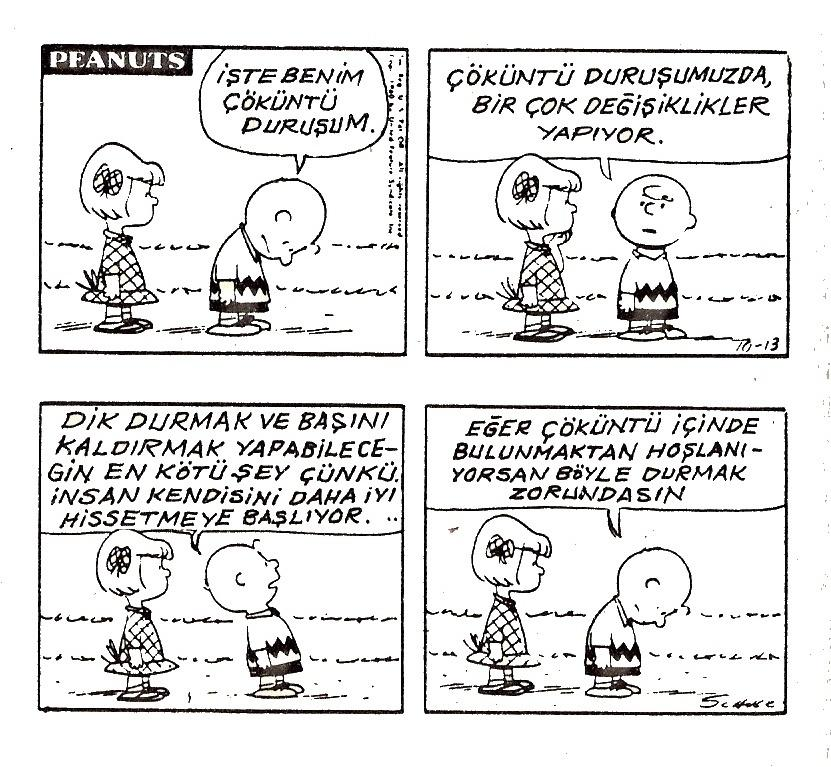

O zamanı hatırladıkça…………..(onları o durumun içinde tutun)
A.Sizin x olmanıza neden olan, ilk şey neydi?
Gördüğünüz bir şey miydi?
İşittiğiniz bir şey miydi
Bir nesne ya da bir kişiye mi dokunmuştunuz?
Sizin bütünüyle x olmanıza neden olan ilk şey neydi?
Gördükten veya işittikten ya da dokunduktan sonra sizin
bütünüyle x olmanıza neden olan ilk şey neydi ?
B.Zihninizde bir görüntü mü oluşturdunuz?
Kendi kendinize bir şey mi söylediniz?
Belirli bir duygu ya da hisse mi sahip oldunuz?
X olmanıza neden olan bir sonraki şey neydi?
A ve B'den (bir şey gördükten, bir şey söyledikten vb.) sonra; sizin bütünüyle x olmanıza neden olan bir sonraki şey neydi?
C.Zihninizde bir görüntü mü oluşturdunuz?
Kendi kendinize bir şey mi söylediniz?
Belirli bir duygu ya da hisse mi sahip oldunuz?
Ya da başka bir şey mi yaptınız?
X olmanıza neden olan bir sonraki şey neydi ?
Bu noktada. "Çok x (çekici olmak, güdülenmek vb.) oldunuz mu?" diye sorun.
Cevap evetse, strateji öğrenilmiştir, (tesbit edilmiştir).
Cevap hayırsa, durum benzeşimli olarak tamamlanıncaya kadar
öğrenme dizinini sürdürün.
Bundan sonraki adım, bu stratejideki her temsilin kesin altbiçem lerini öğrenmektir.
Bu nedenle, stratejinin ilk adımı görselse; aşağıdakileri sorunuz: Gördüğünüz neydi (dış görsel)?
Sizi güdüleyen gördüğünüz şey kesin olarak neyle ilgiliydi ?
Büyüklüğü ne kadardı?
Sınırsız Güç-10
145
Parlaklığı ne kadardı ?
Nasıl hareket ediyordu ?
Stratejinin tüm altbiçemlerine sahip oluncaya kadar bu süreci sürdürün. Aynı dizini ve aynı anahtar altbiçem kelimelerini kullanarak, bir şey yapmaya güdülemek istediğiniz konuyla ilgili şeyleri konuşun ve sonra kişinin içinde bulunduğu durumda ürettiğiniz sonuçlara göre karar verin
Henüz daha stratejinin bütününe sahip olmadınız. Bu nedenle: "Bir şey işitip, zihninizde bir görüntüyü elde ettikten sonra sizi bütünüyle güdüleyen şey neydi? Kendi kendinize bir şey söylediniz mi? içinizde bir şey hissettiniz mi ya da başka bir şey oldu mu?" gibi sorular sormaya devam etmelisiniz. Bu noktada kendisini bütünüyle güdüleyen bir hisse sahip olursa; stratejisi tamamlanmış
demektir. Güdüleme durumunu yaratan; Ae - Vi - Ki şeklinde bir seri temsil üretmiştir. Bir şey işitmiştir, zihninde bir görüntü oluşmuştur ve sonra güdülendiğini hissetmiştir. insanların çoğunun istenen duruma ulaşmaları için bir dış uyarıcı ve iki ya da üç iç uyarıcı yeterlidir. Bazı kimselerin istenen duruma ulaşmaları için on ya da on beş farklı temsil sırasına sahip olmaları gerekir.
Şimdi o kişinin stratejik dizinini öğrendiniz. Artık stratejinin alt biçemlerini bulmanız gerekir. Bu nedenle: "Sizi güdüleyen, işittiğiniz şeyden ne haber?
Kişinin sesinin tonu muydu; kelimelerin kendileri miydi; sesin ritmi ya da hızı mıydı? Zihninizde ne görüntülediniz? O büyük, parlak bir görüntü müydü?" gibi sorular sormanız gerekir. Bunları sorduktan sonra; güdülemek istediğiniz konu hakkında ona aynı tonda bir şeyler anlatarak ve sonra zihninde hangi görüntüyü oluşturacağını ve neler hissedeceğini söyleyerek, cevaplan test edebilirsiniz.
Tüm bunları doğru yaparsanız, gözlerinizin önünde kişinin güdülenmiş duruma girdiğini göreceksiniz. Dizinin doğruluğundan şüphe-146
niz varsa, sırayı biraz değiştirerek uygulama yapın. Sonra ne hissedeceğini, kendisine ne söyleyeceğini söyleyin; onun size anlamsız bir şekilde baktığını göreceksiniz. Çünkü, doğru karışımları yanlış sırada uyguladınız.
Bir kişinin stratejisini öğrenmek ne kadar sürer? Bu, öğrenmek istediğiniz eylemin karmaşıklığına bağlıdır. İstediğiniz konuda güdülemeyi sağlayacak kesin dizini öğrenmek bir ya da iki dakika alır.
Atletizm antrenörü olduğunuzu kabul edelim. Orneğimizdeki kişiyi, uzun mesafe koşucusu olmaya güdülemek istiyorsunuz. Biraz yetenek ve ilgisi olmasına rağmen; kendisini bu işe verecek kadar güdülenmemiştir.
Güdülemeye nasıl başlarsınız? Ona, en iyi atletinizi koşarken mi göstereceksiniz? Yarış pistini mi göstereceksiniz? Onu heyecanlandırmak için gerçek hızın, sizi ne kadar heyecanlandırdığını gösteren bir konuşma mı yapacaksınız? Hayır, şüphesiz böyle yapmayacaksınız. Bu davranışlar görsel stratejiye sahip kişiler üzerinde etkili olacaktır. Bu nedenle, davranışlarınıza karşı ilgisiz kalacaktır.
Oysa, onu güdülemek için işitsel uyarıcıyla bağlantı kurmanız gerekir. Başlamak için görsel bir kişiymiş gibi yavaş yavaş konuşmayın ya da yavaş, cansız bir dokunsal vuruş yapmayın. İyi ayarlanmış, açık ve yankılı bir sesle konuşmalısınız.
Güdüleme stratejisinin başlangıcında öğrendiğiniz tetiklemeyi sağlayacak şekilde; aynı tempo ve vurgu altbiçemlerinde konuşmalısınız. "Eminim atletizm programlarımızın ne kadar başarılı olduğunu işitmişsindir. Şimdi bu ekolden konuşmanın tam sırası. Bu yıl çok sayıda seyirciniz olacak. Seyircileriniz harika tezahürat yapıyorlar. Seyircilerin tezahüratının mucizeler yarattırdığını söyleyen atletlerim var. Tezahürat, kendilerinin bile ummadıkları düzeyde başarılı dereceler yapmalarını sağlıyor. İpi göğüslediklerinde çıkan kükreme sesi, harika bir şey. Antrenörlük yaşantıında ben böyle bir şey işitmedim" şeklinde konuşmalar yapmalısınız. Böylece, onun dilinden konuşmuş oluyorsunuz.
147
Onun kullandığı temsil sisteminin aynısını kullanıyorsunuz. Büyük, yeni stadyumu göstermek için saatlerinizi harcayabilirdiniz ve o da tüm bunlara ilgisiz kalabilirdi. Onun ipi göğüslerken çıkan kükreme sesini gerçekten duymasını sağlarsanız, oltaya takılacaktır.
Bunlar onu güdüleyecek dizinin sadece ilk kısmıdır. Tek başına bu olay, onu bütünüyle güdülemeyecektir. Yukarıdaki süreçle içsel sırayı da bütünleştirmeniz gerekir. Size verdiği tanımlara bağlı olarak, işitsel ipuçlarından; "Şehir halkının kükremesini duyduğunda, kendini hayatının en iyi yarışını çıkarırken görüntüleme yeteneğine sahip olacaksın. Hayatının yarışını çıkarmak için kendini kesin olarak güdülenmiş hissedeceksin." şeklindeki ipuçlarına geçmeniz gerekebilir.
İş adamıysanız; işçilerinizi güdülemek, muhtemelen sizin için en önemli konu olacaktır. Güdülemeyi gerçekleştiremezseniz, muhtemelen iş hayatınız uzun ömürlü olmayacaktır. Güdüleme stratejilerini öğrendikçe, iyi güdüleme yapmanın ne kadar zor olduğunu fark edeceksiniz. Her şeyin ötesinde, her işçinin farklı bir stratejisi varsa; hepsinin ihtiyacını karşılayacak bir temsil bulmak hemen hemen imkânsızdır. Sadece kendi stratejinizi uygularsınız, ancak sadece size benzeyenleri güdüleyebilirsiniz. Dünyanın en inandırıcı ve en iyi düşünülmüş güdüleme konferansını verebilirsiniz; ancak, o değişik kişilerin özel stratejilerine hitap etmedikçe bir işe yaramayacaktır.
O halde ne yapabilirsiniz? Stratejinin anlaşılması, sizde iki ayrı fikrin oluşmasına neden olacaktır. Birincisi bir gruba yöneltilen her güdüleme tekniğinin görsel, işitsel, dokunsal gibi herkese hitap eden bir yönünün olması gerekir. Onlara bir şeyler göstermeli, bir şeyler dinletmeli ve bir şeyler hissettirmelisiniz. Her üç grubun da oltaya takılabilmesi için, sesinizi ve vurgulamalarınızı değiştirebilme yeteneğiniz olmalıdır.
İkinci olarak kişilerle bireysel planda çalışmanın yerine geçebilecek herhangi bir şey yoktur. Bir gruba herkesin çalışabileceği geniş ipuçları verebilirsiniz. Değişik kişilerin kullandığı stra-148
tejilerden tam olarak yararlanabilmek için ideal olanı, stratejilerin kişisel olarak öğrenilmesidir.
Şimdiye kadar bir kişinin stratejisini öğrenmenin temel formülü üzerinde durduk. Bunlardan etkin olarak yararlanabilmek için, stratejinin her adımı üzerinde daha ayrıntılı bilgiye sahip olmanız gerekir. Temel paterne altbiçemleri de eklemeniz gerekir,
Örneğin bir kişinin satın alma stratejisi görselle başlıyorsa; gözlerinin takıldığı şey nedir? Parlak renkler mi ? Büyük boyutlarmı? Çılgın görünen belirli paternlere mi gidiyor yoksa vahşi, heyecan verici tasarımlara mı? Kişi işitselse, seksi yoksa güçlü seslere mi yönelecektir? O gürültülü, patırtılı sesleri mi yoksa iyi ayarlanmış, verimli mırıldanmaları mı seviyor? İyi bir başlangıç için kişinin temel biçemini bilmek önemli bir avantajdır. Daha kesin bir ifadeyle, doğru düğmeye basabilmek için daha çok bilgiye ihtiyaç vardır.
Satışta başarılı olabilmek için ana stratejiyi mutlaka anlamak gerekir. Bunu içgüdüsel olarak yapabilen satış elemanları vardır. Onlar potansiyel bir müşteriyle karşılaştıklarında hemen onunla ahenk içine girerler ve karar verme stratejisini öğrenirler. Şöyle bir başlangıç yapabilirler: " Dikkat ettim, bize rakip firmanın makinesini kullanıyorsunuz. Merak ettim. Sizde bu makineyi alma isteği yaratan ilk şey neydi ? Gördüğünüz, okuduğunuz ya da onun hakkında birilerinin söylediği bir şey miydi? Satıcı ya da ürün hakkındaki bir hissiniz miydi?" Bu sorular biraz garip gelebilir ama; satıcı, "Merak ediyorum; çünkü, gerçekten sizin ihtiyacınızı karşılamak istiyorum" diyerek ahengi oluşturabilir.
Bu sorulara verilecek cevaplar, satıcıya ürünü en etkin biçimde nasıl sunacağına ilişkin paha biçilmez bilgiler sunabilir.
Müşterilerin çok özel satın alma stratejileri vardır. Alış verişe çıktığıında ben de herhangi bir kişiden farklı değilim. Duymak istemediğim biçimde bana satış
yapmaya çalışmak gibi, işi yanlış yapmanın birçok yolu vardır. Fakat doğru yapmanın o
149
kadar çok yolu yoktur. Bu nedenle bir satıcı etkin olabilmek için müşterisinin satın almaya karar vermesine neyin neden olduğunu bulmak zorundadır. Ana karışımlar ve altbiçemler nelerdi? Stratejiyi öğrenmesini bilen bir satıcı, müşterisinin ihtiyaçlarını da tam olarak öğrenebilir. Böylece onun ihtiyaçlarını karşılamak için gerçekten güç kazanır ve devamlı bir müşteri yaratır. Birisinin stratejisini tespit ettiğinde çok kısa sürede anlayabilmek için hangi yöntemlerin günler ya da haftalar alabileceğini öğrenir.
Aşırı yeme gibi sınırlayıcı stratejilerden ne haber? 122 kilo geliyordum. Bu kadar nasıl şişmanlamıştım? Kolay, içki alemi ya da aşırı yeme stratejisi geliştirmiştim.
Bu strateji de çok iyi çalışıyordu. Aç olmadığım zamanlarda, düşünerek stratejimi belirliyordum; fakat çok kısa bir süre sonra tekrar oburlaşıyordum.
O anlara geri döndüğümde, kendi kendime çok yememin nedeni neydi?
Gördüğüm ya da işittiğim bir şey miydi yoksa birisine ya da bir şeye dokunmam mıydı? Sonra gördüğüm bir şey olduğunu fark ettim. Arabayla giderken, yiyecek zincirini oluşturan lokantalardan birini görüyordum. Lokantayı görür görmez; zihnimde orada çok sevdiğim yiyeceklerin olduğuna dair bir görüntü oluşturuyor ve kendi kendime aç olduğumu söylüyordum. Bu da bende açlık hissi uyandırıyordu. Hemen durup bir yemek siparişi veriyordum. Bu stratejiyi tetikleyen işaretleri görünceye kadar en küçük bir açlık hissi bile duymuyor olabiliyordum. Aksilik bu ya her yer bu işaretlerle doluydu. Üstelik aç olmadığım halde birisi "Bir şeyler yiyelim mi?" diye sorsa kendimi belirli yiyecekleri yemeye başlarken hayal etmeye başlıyordum. Sonra kendi kendime, sen açsın çocuk diyerek, açlık hissini yaratıyor ve haydi bir şeyler yiyelim diye cevap veriyordum.
Bundan sonra da televizyon, reklamlarda yiyecek üstüne yiyecek göstererek;
"Aç değil misiniz? Aç değil misiniz?" diye soruyordu. Beynim görüntüler oluşturuyor; iç temsilimde ise kendi kendime aç olduğumu söyleterek en yakın lokantaya yönelmemi sağlayan hisler oluşuyordu.
150
Sonunda stratejimi değiştirerek, davranışımı değiştirdim. Yiyecek işaretini görünce aynada kendimi şişman, çirkin vücutlu olarak görüntüleyecek ve kendi kendime "İğrenç görünüyorum.Bu öğünü atlatmalıyım" dedirtecek şekilde tetikleme yapacak
yeni bir strateji düzenledim. Vücudumun daha çok güçlendğini görerek ve kendi kendime gelişme isteği yaratacak şekilde "Büyük iş başardım. İyi görünüyorsun" diyerek kendimi gelişmiş olarak hayal ettim. Swish paterninde olduğu gibi işaretleri görmem ya da "Öğle yemeğine gitmek ister misin?"
sözünü işitmemle, otomatik olarak yeni stratejim tetikleninceye kadar, her işareti görüşüm ve yemek davetini alışıında; hemen aynada şişman hayalimi görerek, iç diyalogumu işiterek vb. tekrarlar yoluyla tüm ilişkileri kurdum. Yeni stratejinin sonucu olarak şimdiki vücuduma ve bugüne kadar bana destek olan yeme alışkanlıklarıma sahip oldum. Siz de bilinçsiz zihniniz aracılığıyla istemediğiniz sonuçları ürettiren stratejinizi keşfedebilirsiniz. Şimdi bu stratejileri değiştirebilirsiniz.
Bir kişinin stratejisini öğrendikten sonra; onun içinde sevgi hissinin oluşmasına neden olan uyarıcının aynısını tetikleyerek, onun bütünüyle sevildiğini hissetmesini sağlayabilirsiniz. Benzer şekilde, kendi aşk stratejinizi de belirleyebilirsiniz. Aşk stratejileri bir yönüyle diğer birçok stratejiden farklıdır.
Üç ya da dört adımlık yordam yerine, burada tek adım vardır. Bir dokunuş, bir söyleyiş ya da bir bakış şekli kişinin bütünüyle sevildiğini hissetmesine, neden olabilir.
Bu, herkesin sevildiğini hissetmesi için bir tek şey gereklidir anlamına mı gelir?
Hayır. Eminim siz de benim gibi üçüne birden sahip olmak istersiniz. Birisinin bana uygun biçimde dokunmasını, beni sevdiğini söylemesini ve sevdiğini göstermesini isterim. Genellikle bir duygunun diğerlerinden üstün olması gibi, aşkı ifade etmenin bir şekli, derhal şifrenizi çözerek bütünüyle sevildiğinizi hissetmenizi sağlar.
Birisinin aşk stratejisi nasıl öğrenilir? Şu andaki bilgileriniz bu sorunun cevaplandırılması için yeterlidir.Yapacağınız ilk
151
şey nedir? Herhangi bir stratejiyi öğrenirken, ilk olarak ne yapı yorsunuz. Kişiyi öğrenmek istediğiniz stratejiyle ilgili duruma sokuyorsunuz? Olup biteni anlamanın tüm yollarının durumdan geçtiğini unutmayın. Bu nedenle kişiye,"Bütünüyle sevildiğinizi hissettiğiniz bir anınızı hatırlayabiliyor musunuz?"
sorusunu sorun. Kişinin doğru durumda olup olmadığından emin olmak için sorularınıza şöyle devam etmeniz gerekir. "Bütünüyle sevildiğinizi hissettiğiniz kesin bir tarihi hatırlayabiliyor musunuz? O ana geri gidin. Kendinizi nasıl hissettiğinizi hatırlıyor musunuz?" Bu hisleri vücudunuzda şimdi tekrar deneyin.
Kişiyi doğru duruma getirdikten sonra stratejiyi öğrenmek zorundasınız. Şöyle sorun "Aşkın o anını ve duyduğunuz derin hisleri hatırlayın; kişinin size bir şeyler alarak, bir yere götürerek ya da belirli bir şekilde bakarak sizi sevdiğini göstermesi mutlaka gerekli midir? Bütünüyle sevildiğinizi hissetmeniz için, kişinin aşkını mutlaka bu şekilde göstermesi gerekli midir?" Cevaptaki benzeşime dikkat edin.
AŞK STRATEJİLERİNİ ÖĞRENME
Bütünüyle sevildiğiniz bir anınızı hatırlayabiliyor musunuz?
Kesin bir tarih hatırlayabiliyor musunuz?
O ana geri döndüğünüzde tekrar deneyin, (kişiyi o
duruma sokun)
V: Aşkın bu derin hislerini hissetmeniz için karşınızdaki kişinin mutlaka aşağıdakileri göstermesi mi gerekir?
Bir yere götürmek
Bir şeyler almak
Belirli bir şekilde bakmak
Bütünüyle sevildiğinizi hissetmeniz için karşınızdaki kişinin sevdiğini mutlaka bu şekilde mi göstermesi gerekir? (Fizyolojiyle karar verin)
152
A: Aşkın bu derin hislerini hissetmeniz için karşınızdakinin
mutlaka
Belirlibir şekilde sizi sevdiğini mi söylemesi gerekir?
(Fizyolojiyle karar verin)
K: Aşkın bu derin hislerini hissetmeniz için karşınızdaki ki
şinin mutlaka
Size belirli bir şekilde dokunması mı gerekir?
(fizyolojiyle karar verin)
Şimdi altbiçemi öğrenin. Ne kadar özeldirler? Bana göster,
anlat, tanımla.
İçinizde ve dışınızda stratejiyi test edin. Benzeşimli bir fizyolo Jiyle karar verin.
Daha sonra onu durumuna geri götürüp, "bütünüyle sevildiği anı hatırlamasını isteyin. Aşkın bu derin hislerini duyumsayabilmeniz için; bütünüyle sevildiğinizi hissedebilmeniz için karşınızdaki kişinin aşkını belirli bir şekilde mutlaka ifade etmesi mi gerekir?" Benzeşimli olup olmadığına, sözel ve sözel olmayan cevaplara göre karar verin. En sonunda "Bütünüyle sevilmenin nasıl bir his olduğunu hatırlayın. Aşkın bu derin hislerini duyumsayabilmeniz ve bütünüyle sevildiğinizi hissetmeniz için, onun size mutlaka belirli bir şekilde dokunması mı gerekir?" sorusunu, sorun.
Aşkın bu derin hislerini yaratan ana karışımı keşfettikten sonra; artık belirli altbiçemleri bulmanız gerekir. Örneğin "Bütünüyle sevildiğinizi hissetmeniz için birisinin size nasıl dokunması gerekir?" şeklinde sorun. Kişiye bunu göstertin.
Sonra test edin. O şekilde dokunun, doğru şekilde dokunmuşsanız; anında durumunun değiştiğini göreceksiniz.
153
Ben bunu her hafta seminerlerimde yaparım ve asla başarısız olmadım.
Hepimizin belirli bir bakışı, saçımıza bir dokunuş şekÜmiz, "Seni seviyorum"
sesinin içimizi eriten bir tonu vardır. Çoğumuz bunların farkında değilizdir; fakat bu durumda bütünüy le sevildiğimizi hissettiren şeyler, mücadele yeteneğimiz olur.
Seminere katılan kişilerin beni tanımamaları önemli değildir; çünkü onlar yabancılarla dolu bir sınıfın ortasında duruyorlar. Onlara aşk stratejileri aracılığıyla doğru şekilde dokunur ya da bakarsam erirler. Çok fazla şansları yoktur, çünkü onların bütünüyle sevildiklerini hissetmelerini sağlayan sinyaller tam olarak beyinlerine ulaşmaktadır.
Çok az kimse başlangıçta bir yerine iki aşk stratejisine sahip olmaktadır. Onlar hem dokunulmayı, hem de kendilerine sevildiklerinin söylenmesini bekliyorlar.
Bu nedenle onları doğru duruma getirmek ve bir ayırım yaptırtmak zorundasınız. Onlara ses olmadan sadece dokunmakla, kendilerinin bütünüyle sevildiğini hissedip edemeyeceklerini; sonra dokunulmadan sadece seslenilerek kendilerinin bütünüyle sevildiğini hissedip hissedemeyeceklerini sorun. Doğru durumun içindeyseler; yanılgıya düşmeden açık bir ayırım yapabileceklerdir.
Her üçüne birden ihtiyacımız olduğunu unutmayın, fakat kasayı açan sadece bir tanesidir. Sihir sadece birindedir.
Çocuğunuzun ya da eşinizin aşk stratejisini bilmek; ilişkilerin desteklenmesini geliştirmede en güçlü anlayışlardan biridir. Herhangi bir anda ona sevildiğini nasıl hissettireceğinizi bilmek sahip olunacak oldukça güçlü araçlardan birisidir.
Onun aşk stratejisini bilmiyorsanız, bu oldukça üzücü olabilir. Hayatımızda, bir kişi de olsa, mutlaka aşk hissini paylaşmışızdır. Sevdiklerimize sevdiğimizi söylememize rağmen, sözlerimize inandıramadığımız veya onların bizi sevdiklerine, bizim inanmadığımız zamanlar olmuştur. Stratejiler uyuşmadığı için iletişim kurulamamıştır.
İlişkilerde gelişen enteresan bir dinamik vardır. İlişkinin başlangıcında benim sorgulama adını verdiğim bir bölüm vardır
154
Ki burada çok hareketliyizdir. Öyleyse onların kendilerini sevdiğimizi öğrenmelerini nasıl sağlamalıyız? Sadece göstererek yada dokunarak mı?
Şüphesiz değil. Sorgulama sırasında hepsini birden yaparız. Sürekli birbirimize gösterir, anlatır ve dokunuruz.İlerledikçe biz bunların üçünü de hâlâ yapmaya devammı edeceğiz? Bazı çiftler yapar. Onlar bir istisnadır. Şimdi biz onu daha az mı seviyoruz? Şüphesiz hayır! Artık sadece hareketli değiliz. İlişkimizde kendimizi rahat hissediyoruz. Onun bizi sevdiğini biliyoruz ve biz de onu seviyoruz. Peki şimdi aşk hislerimizin iletişimini nasıl yapacağız? Muhtemelen aldığımız gibi yapacağız. Böyle yaparsak ilişkideki aşk hislerinin kalitesi ne olur?
Bu konuyu biraz inceleyelim.
Erkeğin aşk stratejisi işitselse; büyük bir olasılıkla eşine aşkını nasıl ifade edecektir? Şüphesiz anlatarak; fakat kadının aşk stratejisi görselse, yani ancak belirli görsel uyarıcıları aldıktan sonra beyni derin aşk hislerini duymasına neden oluyorsa ne olur.Zaman ilerledikçe ne olacaktır? her ikisi de, bütünüyle sevildiğini hissetmeyecektir. Sorgulama sırasında gösterme, anlatma, dokunmanın üçünü birden yaparak birbirlerinin aşk stratejilerini tetiklemişlerdi.
Şimdi erkek eve gelip, "Seni seviyorum tatlım" dediğinde kadın, "Yo hayır sevmiyorsun" der. Erkek de " Sen neden bahsediyorsun? Sen bunu nasıl söylersin?" der. Kadın da muhtemelen "Konuşmak kolay. Bana artık hiç çiçek getirmiyorsun. Hiç yemeğe çıkarmıyorsun. Bana asla eskisi gibi bakmıyorsun"
diyebilir. Erkek de "Bakmak da ne demek? Seni sevdiğimi söylüyorum ya" diye cevap verebilir. Kadın artık sevildiğine ilişkin derin hislerin deneyimine sahip olmayacaktır, çünkü onun hislerini tetikleyecek derin uyarıcılar, kocası tarafından artık ona tutarlı bir şekilde gönderilmemektedir.
Yukarıdaki olayın tersini düşünelim. Erkek görsel, kadın işitsel olsun. Erkek eşine olan sevgisini bir şeyler alarak, yemeğe götürerek ya da çiçek göndererek gösterebilir. Bir kadın kocasına "Sen beni sevmiyorsun" der. Erkek şaşırır ve
"Nasıl böyle söylersin? Sana aldığım şu eve bak, seni götürdüğüm yerlere 155
bak" der. Kadın, "Ya, fakat sen bana asla beni sevdiğini söylemedin" der. Erkek de kadının stratejisiyle uyuşmayan bir tonda, "Seni seviyorum" diye bağırır.
Sonuç olarak kadın sevildiğini hissetmez.
Tüm zamanların en yanlış eşleşmelerinden biri olan, dokunsal bir adamla görsel bir kadın örneğini inceleyelim. Adam eve gelir ve eşini kucaklamak ister. Kadın,
"Bana dokunma, beni daima bir eşya gibi kaldırıyorsun, bütün yapmak istediğin kalçalarıından tutup sarılmak. Biz niçin bir yerlere gitmiyoruz? Do kunmadan önce bana bir bak" der. Bu senaryolardan herhan biri size tanıdık geliyor mu?
Başlangıçta tüm stratejileri uyguladığınız, fakat zaman ilerledikçe sadece tek yönlü aşk iletişimi kurduğunuz ilişkinizin, eşinizin başka bir yöne ihtiyacı olması'
nedeniyle nasıl sona erdiğini anlayabiliyor musunuz?
Farkında olma, güçlü bir araçtır. Birçoğumuz kendi dünya haritamızın gerçeği yansıttığını düşünürüz. Sevildiğimizi neyin hissettirdiğini biliriz. Bunun herkes için geçerli olduğunu sanırız. Haritanın bölgenin kendisi olmadığını unuturuz. O, sadece bizim bölgeyi nasıl gördüğümüzü yansıtır.
Şimdi aşk stratejisinin nasıl öğrenileceğini biliyorsunuz. Eşinizle oturun ve onun bütünüyle sevildiğini hissetmesine neyin neden olduğunu bulun. Kendi stratejinizi ortaya koyduktan sonra, sizin aşk hislerinizin nasıl tetikleneceğini, eşinize öğretin. Bu anlayışın ilişkilerinizin kalitesinde yapacağı değişiklik, bu kitaba yaptığınız yatırımı kat kat aşar.
İnsanların her şey için bir stratejisi vardır. Birisi sabahleyin yataktan uyanık ve canlı kalkıyorsa; muhtemelen kendisi farkında değildir; ama bunu yapmak için bir stratejisi vardır. Fakat ona sorarsanız, size uyanık ve canlı kalkmasını sağlamak için ne söylediğini, ne hissettiğini ya da ne gördüğünü söyleyebilir.
Stratejiyi öğrenmenin yolunun aşçıyı mutfağa koymaktan geçtiğini unutmayın.
Yani onu istediğiniz duruma getirin ve o istediğiniz durumun içindeyken; durumu yaratmak ve korumak için ne yaptığını bulunuz. Sabahleyin kolayca kalkan biri-156
Sine bakıp ondan belirli bir sabahta neler yaptığını hatırlamasını isteyebilirsiniz.
Bilinçli olmak için yaptığı ilk şeyi sorun. O size içinden,"Kalkma vakti, haydi kalk"
sesini duyduğunu söyleyebilir. Sonra hızla kalkması için yaptığı ilk şeyi hatırlamasını isteyebilirsiniz. Bir şeyi mi görüntülemiş, yoksa bir şey mi hissetmiş? "Kendimi yataktan sıçrayıp, ılık duşa giderken görüntüledim.
Vücudumu sarstım ve kalktım" diyebilir. Çok basit bir strateji gibi görünüyor.
Bundan sonra, karışımların miktarını ve türlerini öğrenmek isteyeceksiniz. Bu nedenle, "Kalkma zamanında söylediğin ses neye benziyordu? Seni kaldıran sesin kalitesi neydi?" sorularını soracaksınız. O da muhtemelen, "Ses yüksek ve çok hızlıydı" şeklinde cevap verecektir. Şimdi de, görüntülediğin manzara neye benziyordu?" sorusunu sorun. "Parlaktı ve hızlı hareket ediyordu" şeklinde cevap verebilir.Şimdi bu stratejiyi kendi kendinize deneyebilirsiniz. Benim daha önce keşfettiğim gibi siz de kelimelerin, görüntülerin hızını arttırınca, parlaklığını ve sesin şiddetini yükseltince anında kalktığınızı göreceksiniz.
Tersi durumdaysanız, yani uyumakta güçlük çekiyorsanız, sadece iç diyalogunuzu yavaşlatmak ve esneyen, uykulu tonlara getirmek; kendinizi hemen yorgun hissetmenize neden olacaktır. Bunu hemen şimdi deneyin.
Kafanızın içinde, çok yorgun bir kişiymiş gibi esneyen bir sesle, çok yavaş
konuşun. Ne kadar yorgun ve uykulu olduğunuzdan konuşun, şimdi hızlanın ve aradaki farkı hissedin. Buradaki önemli nokta, birisini bir duruma sokup özel olarak neleri hangi sırada yaptığını bulduğunuz takdirde herhangi bir stratejiyi modelleyebileceğinizdir. Anahtar, sadece birkaç strateji öğrenip sonra onları uygulamak değildir. Buradaki en önemli husus, sürekli olarak kimlerin neyi iyi yaptığına dikkat etmek, onların bu işi nasıl yaptıklarını bulmak, stratejilerinin neler olduğunu tesbit etmektir. Modellemenin de ilgi alanı budur.
SDP zihnin nükleer fiziği gibidir. Fizik; gerçeğin yapısı, dünyanın doğasıyla ilgilenir. SDP aynı işi zihniniz için yapar. Nes
157
neleri çalışabilecek şekilde parçalara ayırmanıza izin verir. Kişiler, yaşamları boyunca bütünüyle sevildiklerini hissedebilecekleri bir yol bulmak için çaba gösterirler. Onlar, kendilerini tanıtmak için analizcilerle görüşmeye ve nasıl başarılı olunacağını öğreten kitapları okumaya çok zaman harcarlar. SDP, bunların ve diğer amaçların mükemmel, etkin ve verimli bir şekilde nasıl gerçekleştirileceğinin teknolojisini verir.
Dizin ve iç temsil aracılığıyla becerikli duruma girmenin bir yolunu öğrenmiş
bulunuyorsunuz. Diğer yol fizyolojiden geçer. Daha önce vücut ve zihnin, sibernetik çevrim içinde nasıl birbiriyle ilişkilendiğini konuşmuştuk. Bu bölümde durumun zihinsel yönünü tartıştık.
158
BÖLÜM: 9
Mükemmelliğin Bulvarı:
Fizyoloji
Kalpten kötülükler; elin ele, dudağın dudağa değmesiyle atılabilir.
Tennessee Williams
SEMİNERLERİMİ yönetirken daima gürültülü, neşeli, çoşkulu bir karmaşıklık görünümü oluştururum.
Uygun bir zamanda kapıdan içeri girerseniz, belki de üç kişiyi hoplayıp zıplarken, bağırıp çağırırken, aslanlar gibi kükrerken, kollarını sallarken, yumruklarını Rocky gibi sallarken, göğüslerini şişirirken, tavus kuşu gibi gururla dolaşırken, baş parmaklarıyla tamam işareti yaparken, isterlerse bir şehri aydınlatabilecek kadar büyük kişisel güce sahipmişcesine davranırlarken görebilirsiniz.
Tüm bunların arkasında yatan nedir?
Tüm bunlar sibernetik çevrimin diğer yüzünü oluşturan fizyolojiyle ilgilidir. Bu patırtı; şimdiye kadar hissettiklerinizden daha güçlüymüş, daha becerikliymiş, daha mutluymuş ve başa
159
racağınızdan eminmiş gibi eyleme geçmekle ilgilidir. Aynı zamanda bütünüyle enerji doluymuş gibi eyleme geçmenizle ilgilidir. Herhangi bir sonuca ulaşmada sizi destekleyecek duruma girmenin bir yolu da, sanki sonucu gerçekleştirmiş
gibi davranmaktır. Fizyolojinizi, sonucu etkin olarak gerçekleştirmiş olduğunuzu hayal ettiğiniz duruma soktuğunuzda; "miş" gibi davranmak çok etkili olur.
Anında durumları değiştirmek, dinamik sonuçlar üretmek için sahip olduğunuz en güçlü araç fizyolojidir. "Güçlü olmak istiyorsanız, güçlüymüş gibi davranın"
diye eski bir deyiş vardır. Kelimeler bundan daha gerçekçi bir biçimde konuşulmamıştır. Seminerlerime katılanların yaşamlarını değiştirecek güçlü sonuçlar üretmelerini isterim. Bunu yapabilmek için onlar; mümkün olan en becerikli fizyolojide olmak zorundadırlar; çünkü, güçlü fizyolojiye sahip olmadan güçlü eylem yapılamaz.
Kendinizi canlı, hareketli, heyecanlı bir fizyolojiye uyarlarsanız, sonuçta siz de aynı duruma girersiniz. Herhangi bir koşulda sahip olabileceğimiz en büyük kaldıraç, fizyolojidir. Çünkü o, hatasız ve hızlı çalışır. Fizyoloji ile iç temsil arasında doğrudan bir bağlantı vardır. Birisini değiştirince diğeri de değişir.
"Düşünce yoktur, sadece vücut vardır." ya da "Sadece düşünce vardır, vücut yoktur" şeklinde zıt, fakat doğru iki söz söylenebilir. Fizyolojinizi, yani duruşunuzu, nefes alma şeklinizi, kaslarınızın gerilimini, ses tonunuzu değiştirirseniz; iç temsiliniz ve durumunuz da değişecektir.
Kendinizi bütünüyle bitkin hissettiğiniz bir anınızı hatırlıyor musunuz? Fizyolojik olarak canlı olduğumuz zamanlar dünyaya başka türlü, cansız olduğumuz zamanlar başka türlü bakarız. Fizyolojik işlemler beynimizi kontrol etmede çok güçlü araçlardır. Bu nedenle fizyolojinin bizi etkilediğinin farkına varmak çok önemlidir. Fizyoloji dışsal bir değişken değildir. Yaşamı oluşturan eylemler bütününün önemli bir parçasıdır.
Fizyolojiniz kötüleştiğinde, sizin durumunuzdan gelen pozitif enerji de azalacaktır. Bu nedenle fizyoloji, duygusal değişi-160
min kaldıracıdır. Gerçekten de her duygunun fizyolojik bir karşlığı vardır.
Durumunuzu
değiştirmeden
fizyolojinizi
değiştiremezsiniz.
Durumu
değiştirmenin iki yolu vardır. Ya iç temsilinizi değiştireceksiniz ya da fizyolojinizi.
Durumunuzu hemen değiştirmek istiyorsanız; fizyolojinizi; yani nefes alışınızı, duruşunuzu, yüz ifadenizi, hareketlerinizin kalitesini vb. değiştirin, Kendinizi yorgun hissetmeye başlayınca; omuzlarınızda çökme, bir çok temel kasın gevşemesi vb. olaylar ortaya çıkar. Bu durumda vücudunuzla ilişkiyi sürdürebilmek için fizyolojik olarak bazı işlemler yapmanız gerekir. Sinir sisteminize yorgunluk mesajı verecek şekilde iç temsilinizi değiştirirseniz, kendinizi yorgun hissedersiniz. Fizyolojinizi güçlü olduğunuz anlardaki şekle sokarsanız, iç temsiliniz ve o andaki hisleriniz değişecektir. Kendi kendinize yorgun olduğunuzu söylemeye devam ederseniz, iç temsiliniz de sizi yorgun olarak tutmaya devam edecektir. Kendi kendinize güçlü olduğunuzu söylerseniz ve fizyolojinizi bilinçli olarak değiştirirseniz, vücudunuz buna uyacaktır. Son zamanlarda bilim adamları hastalık ve sağlığın, canlılık ve ruhsal çöküntünün kişiler tarafından alınan bir karar olduğunu önemle belirtmektedirler. Bunlar fizyolojinizle ilgili verebileceğiniz kararlardır. Genellikle bilinçli olarak verilmez-ler; ama şu ya da bu şekilde bu kararlar veriliyor.
Hiç kimse bilinçli olarak mutluluğu bırakıp mutsuz olacağım demez. Çöküntü içindeki insan ne yapar? Çöküntüyü zihni bir durum olarak düşünebiliriz. Fakat çöküntünün çok belirgin bir fizyolojisi vardır. Çöküntü içindeki insan genellikle yere bakarak etrafta dolaşır. Omuzlarını aşağıya düşürür, kısa kısa ve zayıf nefes alır. Yaptığı bütün iş vücudunu çöküntü fizyolojisine sokmaktır. Bu kişiler ki çöküntü içinde olmaya mı karar vermiştir? Evet, kesinlikle. Çöküntü bir sonuçtur ve özel vücut görüntülerinin olması gerekir. Aşağıda görüldüğü gibi karikatürist bu durumu çok güzel yakalamış.
Sınırsız Güç -11
161

Burada insanı şaşırtan şey , insanın fizyolojisini belirli şekilde değiştirince kolaylıkla çoşkulu duruma geçebilmesidir. Peki, duygular ne olacak ? Çöküntü içindeki bir kişi, iç temsilinde bir değişiklik yapmadan çok kısa sürede durumunu değiştirebilir. Dik durursanız , omuzlarınızı yükseltirseniz, göğsünüzden derin nefes alırsanız, ileriye bakarsanız yani kendinizi verimli bir fizyolojik şekle sokarsanız; çöküntü içine düşemezsiniz. Bunu hemen deneyin ve sonucu görün!
Yapmak istediğiniz; fakat yapamayacağınız bir şeyi düşünün. Şimdi de aynı olayı yapabiliyormuş gibi davranın. Nasıl konuşursunuz ? Nasıl nefes alırsınız?
Fizyolojinizi yapabileceği
162
nizden emin olduğunuz bir işi düşünürken hangi şekle sokuyorsanız; mümkün olduğu kadar o şekle sokun. Bütün vücudunuza aynı mesajı verin. Duruşunuz, nefes alışınız, yüzünüz aynı mesajı vermelidir. Şimdikiyle daha önceki durumunuz arasındaki farka dikkat edin. Doğru fizyoloji benzeşimini tanıyabilirsiniz; daha önce başarmayı düşünemeyeceğiniz şeyleri bile, başarabilecekmiş gibi hissetmeye başlarsınız.
Benzer olaylar kızgın kömür üzerinde yürüme deneyinde de meydana gelmektedir. Bazı kimseler kızgın kömür yatağının önüne iç temsilleri ve fizyolojilerinin uyumu sayesinde tam bir güvcen ve hazırlık içinde gelmekte, güvenli ve sağlıklı bir şekilde kızgın kömürlerin üzerinden yürüyerek geçmektedirler. Bununla birlikte bazı kimseler kızgın kömürlerin önüne gelince paniklemeye başlıyorlar. Onlar sonuç hakkındaki iç temsillerini değiştirmiş ve şimdi başlarına gelebilecek en kötü senaryoyu düşünmeye başlamış olabilirler.
Ya da yüzlerini yalayan sıcaklığın etkisi, güven duygularını kömür yatağına yaklaştıkça yok ediyor olabilir. Bunun sonucu olarak korkudan titremeye, ya ağlamaya ya da donup kalmaya, bütün kaslarını kilitlemeye yada başka bir takım fizyolojik reaksiyonlar göstermeye başlayabilirler. Onların korkularını bir anda yok etmek ve onları imkansızmış gibi görünen bir işe başlatmak için sadece ve sadece durumlarını değiştirmek gerekir. Tüm davranışlarımızın, içinde bulunduğumuz durumdan kaynaklandığını hatırlayınız. Kendimizi kuvvetli ve canlı hissettiğimizde, yorgun ve bitkinken asla başlayamayacağımız işleri yapmaya başlarız. Bu nedenle ateş üzerinde yürümek, sadece iş olsun diye öğrenilen bir şey değildir. Bu yürüyüş insanlara, daha önceki düşünceleri ne olursa olsun, amaçlarını anında destekleyecek davranış ve durum değiştirme deneyimi verir.
Kızgın kömürlerin karşısında ağlayan, donup kalan ya da titreyen kimselere ne yapılabilir ? Tek bir şey, iç temsilleri değiştirilebilir. Bu da onlara başarılı ve sağlıklı
bir
yürüyüşle
karşıya
geçtiklerinde
neler
hissedeceklerini
düşündürtebilmekle
163
olur. Böylece onların iç temsilleri, fizyolojilerini değiştirecektir. İki ile dört saniye arasında insan verimli duruma geçebilir. Biraz önce korkudan titreyen, donup kalan, ağlayan insanlar şimdi haydi deyince kızgın kömürlerin üzerinden yürüyerek geçerler. Fakat bazen insanlar çok berrak bir yanma iç görüntüsüne sahip olabilirler ya da iç temsillerinde yarattıkları düşünce, yürüyüşü gerçekleştirecek kadar güçlü olmayabilir. Bu durumda onların alt modellerini değiştirmek gerekir ki, bu işlem uzun sürebilir.
Kızgın kömürlerin önünde bütünüyle panikleyen kişiler için izlenecek diğer bir yol da; onların fizyolojilerini değiştirmektir. Bu işlemden sonra kişi iç temsilini değiştirirse; sinir sistemi anında vaziyetini, nefes alışını, kas gerilimini ve diğerlerini değiştirmek için sinyal göndermek zorundadır. Kişi diğer haberleşmeleri atlayarak doğrudan fizyolojisini değiştirebilir. Bundan sonra niçin yürüyüşe başlamasın. Ağlayan kimselerin başlarını kaldırmaları ve ileriye bakmaları sağlanmalıdır. Böyle yapmakla kişinin sinir yapısının hareket yerine, görüntü kısmına ulaşması sağlanır ve büyük bir olasılıkla kişi ağlamayı hemen keser. Berbat durumda iseniz ya da ağlıyorsanız ve bunları durdurmak istiyorsanız başınızı kaldırın, omuzlarınızı dik tutun ve coşku durumuna geçin.
Hisleriniz anında değişecektir. Aynı şeyleri çocuklar üzerinde deneyebilirsiniz.
Ağlamaları ve acıları anında duracak veya en azından çok büyük oranda azalacaktır.
Aynı teknik, yapamayacağınızı hissettiğiniz her iş için uygulanabilir. Bir kadına ya da bir adama yaklaşamayacağınızı, patronla konuşamayacağınızı ya da benzerlerini hissetmeye başladığınızda, hemen bu tekniği uygulamaya koyun.
Durumunuzu ve gücünüzü; kendi kendinize beyninizdeki konuşmaları ve gö-
rüntüleri ya da duruşunuzu, nefes alışınızı, sesinizin tonunu değiştirerek, değiştirebilirsiniz. İdeal olanı, hem fizyolojiyi hem de tavrı değiştirmektir. Bunu yapınca vücut hemen verimli durumuna geçer ve istenen sonucu elde etmek için gerekli eylemleri uygulamaya başlar.
164
Aynı şey spor yaptıktan sonraki durum için de geçerlidir.Spordan sonra nefes almakta zorlandığınızı, çok yorulduğunuzu söylerseniz, vücudunuzla böyle haberleşirseniz, gerçekten bitkin düşersiniz. Bununla birlikte gerçekten nefessiz kalsanız bile bilinçli olarak dik durursanız normal nefes almaya kendinizi yöneltirseniz, çok kısa bir süre sonra yorgunluğunuzun geçtiğini görürsünüz.
Fizyolojinizi ve iç temsilinizi değiştirerek değiştirdiğiniz eylemleriniz ve hisleriniz, aynı zamanda vücudunuzun biokimyasal ve elektriksel sürecini de etkiler.
Çöküntüye düşen insanlar üzerinde yapılan çalışmalar onların kanlarındaki Beyaz hücre sayısının azalarak bağışıklık sistemini zayıflattığını göstermiştir.
Kirlian fotoğrafı nedir biliyor musunuz? Bu fotoğraf vücudun bioelektriksel enerjisinin gösterimidir ve kişinin içinde bulunduğu durumda değişiklikler olduğunda; fotoğrafta da çok önemli değişiklikler meydana gelir. Zihinle vücut bağlantılı çalıştığı için bir konu üzerinde yoğunlaştığınızda; bütün elektriksel alanınız değişebilir ve başka türlü yapamayacağınız işleri yapabilirsiniz. İnsanın gücünü inançları kadar kısıtlayan çok az şey vardır.
Zihin vücut ilişkisi hakkında araştırmalar yapan Dr. Herbert Benson, dünyanın çeşitli bölgelerinde yapılan büyülerin gücü hakkında, insanı hayretlere düşüren hikayeler yayınlamıştır. Avustralya'nın ilkel kabilelerinden birisinde büyücü doktorlar "kemik gösterme" olarak adlandıran bir büyü yaparlar. Bazı sihirli seslerden oluşan bu büyü; kurban üzerinde o kadar etkili olur ki, kurban mutlaka çok büyük bir hastalığa yakalanacağını ya da muhtemelen öleceğini bilir. 1925'de gerçekleşen böyle bir olayı, Dr. Benson aşağıdaki şekilde anlatmaktadır. "Düşman tarafından büyülendiğini farkeden adam, gerçekten acınacak bir haldeydi. Tehlikeli ve anlamlı sözle; gözleri parlayarak, ellerini sanki kanına dökülen zehirleyici sıvıyı geçiştirmek ister gibi kaldırarak donup kalmıştı.
Yanakları soldu, gözleri donuklaştı, yüz ifadesi korkunç bir şekilde bozuldu.
Çığlık atmaya yelteniyor, fakat genellikle sesi boğazında düğümleniyordu.
Ağzında
165
oluşan köpükleri görmeliydiniz. Vücudu titremeye, adaleleri istemeden burkulmaya başlamıştı. Sallanırken sırt üstü yere düştü kısa bir süre sonra bayıldı ve biraz daha sonra can çekişir gibi kıvranmaya, ve yüzünü elleriyle kapatarak inlemeye başladı.... O'nun ölümü bir an meselesiydi".
Hikâye çok canlı ve çok acıklı; fakat ben sizden böyle bir model kurmanızı istemeyeceğim. Bu hikâye inanç ve fizyolojinin gücünü en iyi anlatan örneklerden birisidir. Klasik terimlerle söylersek, bu kişiye hiç ama hiçbir şey yapılmamıştır. Fakat kendi inancı ve fizyolojisinin gücü; onu tahrip edici, korkunç bir negatif gücün etkisinde bırakmıştır.
Bu tür deneyimler, sadece bizim ilkel olarak adlandırdığımız toplumlarda mı olmaktadır? Şüphesiz hayır. Benzer deneyimler her gün çevremizde de olmaktadır. Sadece kendi yarattıkları güçsüzlük, çaresizlik ve yalnızlık hisleriyle ölen çok sayıda kurban vardır.
Bu ilginç yazıda, deneyin hep olumsuz tarafları ön plana çıkarılmaktadır. Oysa aynı deneyin neden olumlu taraflarının gündeme getirilmediği konusu gerçekten araştırılmaya değer. Örneğin çok sevdiği birisini kaybeden kişinin bu olayın etkisiyle yaşam sevincini kaybetmesi ya da gerilimin (stresin) korkunç etkileri nedeniyle kısa bir süre sonra ölmesi, çok sık rastlanılan bir olaydır. Oysa aynı deneyimin bizi iyileştiren olumlu etkileri de vardır.
Norman Cousin'in hikâyesi, olumlu etkiyi gösteren en iyi örneklerden birisidir.
Cousin "Bir Hastalığın Anatomisi" adlı kitabında halsizlik yaratan, uzun süren bir hastalıktan, gülme aracılığıyla, mucizevi bir şekilde sağlığına nasıl döndüğünü anlatmaktadır. Gülmek, Cousin'in yaşam sevinci ve zenginliğini artırmak için bilinçli olarak kullandığı tek araçtı. O'nun rejiminin çok önemli bir kısmı kendisini güldürecek film, televizyon programları ve kitaplardan oluşuyordu.
Bunlar da onun iç temsilini, olumlu yönde geliştirdi. Gülmek; fizyolojisini temelinden değiştirdi ve sinir sistemi de mesajlara bu yönde cevap verdi.
166
Böylece daha iyi uyuyarak, acılarını azaltarak, bütün fiziksel varlığını geliştirdi.
Doktorların birisinin, bütünüyle iyileşme şansının yüzde birihtimaI olduğunu söylemesine rağmen; Cousin sonunda tamamen İyileşti. Cousin, ulaştığı sonucu şu şekilde açıklamaktadır,.Görünüş çok kötü olsa bile, insan zihni ve vücudunun yeniden oluşturma gücü asla küçümsenmemelidir. Yaşam gücü, belki de yeryüzünde en az anlaşılan güçtür."
Son yıllarda Cousin ve diğerlerinin deneyimlerini açıklığa kavuşturan ilginç araştırmalar yapılmaktadır. Hislerimizi etkileyen yüz ifadeleri üzerinde yapılan çalışmalar, iyi durumdayken hile pek fazla gülmediğimizi ortaya çıkarmıştır.
Oysa gülümseme ve gülme, biyolojik süreci etkileyerek bizim kendimizi daha iyi hissetmemize neden olur. Onlar beynimize giden kan ve oksijen miktarını, sinir taşıyıcılarının uyarı düzeyini artırır. Benzer şeyler diğer ifadelerle de oluşur. Yüz ifadenizi korku, endişe, sürpriz, kızgınlık fizyolojisine sokun bakalım neler hissedeceksiniz!
"Vücutlarımız bahçemizdir... niyetlerimiz de bahçıvanlarımız. "
— William Shakespeare Yüzümüzde yaklaşık olarak seksen tane kas vardır. Bu kaslar gevşeyip gerilerek beynimize giden kan miktarını, dolayısıyla beynimizin fonksiyonlarını etkilerler.
1907 de Fransız Dr. Israel Waybourn bu konuda çok çarpıcı bir yazı yayınlamıştır. Yazısında yüz ifadelerinin gerçekten de hislerimizi değiştirdiğini belirtmiştir. Bugünkü araştırmacılar da benzer sonuçlara ulaşmaktadırlar. San Fransisko'daki Kaliforniya Üniversitesi'nde Dr. Paul Eckman 1985 yılındaki araştırmasında şunları yazmaktadır: "Bir duyguya sahipseniz bunun sizin yüzünüzde görüleceğini biliyoruz. Bunun tersi de doğrudur. Yüzünüze nasıl ifade verirseniz o şekilde bir his oluşturursunuz. Bir acıya gülerse 167
niz; içinizde acı hissetmezsiniz. Yüzünüz üzüntü gösterirse; bunu içinizde de hissedersiniz." Gerçekte Eckman'ın söyledikleri yalan makinelerini kandırmak için de kullanılıyor. Kendisini inanç fizyolojisinin içine sokan kimseler; gerçekte yalan söylüyor olsalar bile, makine onların doğru söylediğini kaydetmektedir.
Fizyolojinin önemli önermelerinden birisi de benzeşimdir,, Düşündüğünüz olumlu bir mesajı iletmek isterken, sesiniz zayıf ve inançsızsa ve vücut diliniz dağınıksa;
benzeşim
içinde
değilsiniz
demektir.
Benzeşimsizlik;
olabileceklerinizi, yapabileceklerinizi ve en güçlü duruma ulaşmanızı engelleyecektir.Kendi kendinize zıt mesajlar vermek, bilinçaltınıza yumruk atmaya benzer.
Niçin olduğunu kesin olarak bilmemekle birlikte bazı kimselere inanmadığınız zamanlar olmuştur. Kişinin söyledikleri akla uygundur; fakat siz ona şu ya da bu nedenden ötürü, gerçekten inanmazsınız. Bilinçsiz zihniniz bilinçli zihninizin kavrayamadığı bir şeyi kavramıştır. Birisine bir şey sorduğunuz zaman kişi evet derken, bilinçsiz bir şekilde kafasıyla hayır hareketi yapabilir. Ya da bu işi yapabilirim der; fakat o anda omuzlarının aşağıya doğru düştüğünü, yere doğru bakmaya başladığını, yani gerçekte bu işi yapamayacağını fark edersiniz. Kişinin bir kısmı isteğini yerine getirmek istiyor, diğer kısmı istemiyor, yani bir kısmı güven dolu, diğer kısmı güvensiz durumdadır. Benzeşimsizlik, kendisine karşı çalışmaktadır. O aynı anda iki yöne birden gitmeye çabalamaktadır.
Kelimeleriyle bir şeyi temsil ediyor, fizyolojisiyle çok başka bir şeyi.
Vücudumuzun bir kısmının istediği bir şeyi, diğer bir kısmının istememesinden doğan benzeşimsizliğin faturasını ödediğimiz, epeyce örnekle karşılaşmışızdır.
Benzeşim güçtür, kuvvettir. Zihnini ve fiziksel kaynaklarını bütünüyle bir işin yapılmasına uygun olarak yönlendirebilen kimseler başarılı olurlar. Bir an durun ve tanıdığınız üç benzeşimli ve üç benzeşimsiz kişiyi düşünün. Bunların aralarındaki farklar nelerdir? Bu kişilerle karşılaştığınızda kişisel olarak kimlerden nasıl etkileniyorsunuz?
168
Kişisel gücü geliştirmenin temeli benzeşimdir. İletişimde bulunurken kelimelerinizle, sesinizle, nefes alışınızla yani tüm fizyolojinizle etkili olmalısınız.
Vücutla kelimeler uyuştuğunda; tf açık ve net mesajlar ulaşır ki, arzu edilen budur ve zihinde buna uygun karşılıklar verecektir.
Kendi kendinize, işte yapmak istediğim bu dersiniz; fakat fizyolojiniz zayıf ve kararsızsa, beyniniz hangi mesaja uyacaktır.Bu titrek görüntülü televizyonu seyretmeye benzer. Bu şekilde sadece resimleri anlayabilirsiniz. Aynı şey beyniniz için geçerlidir. Vücudun sağladığı sinyaller zayıf ve çatışmalı ise beyin açık olarak ne yapması gerektiğini anlayamaz. Bu, savaşan askere komutanın,
"Eh, bunu yapmaya çalışsak iyi olur. Emin değilim ama bir işe yarayabilir, onun için çarpışalım ve ne olacağını görelim" demesine benzer. Bu ifadeler askeri hangi duruma sokar?
Ben bunu mutlaka yapacağım derseniz ve duruşunuzla, yüz ifadenizle, nefes alışınızla, duruş ve hareketlerinizin kararlılığı ile sözlerinizle ve ses tonunuzla fizyolojinizi bir bütün haline getirirseniz; o işi mutlaka yaparsınız. Benzeşim bütünüyle yapmak istediğiniz şeye doğru yönlenmenizi söyler ve ciddi, kararlı olduğunuza emin olmak için atılabilecek en büyük adım benzeşim fizyolojisidir.
Kelimeleriniz ve vücudunuz uyum içinde değilse, bütünüyle etkin olamazsınız.
Benzeşimi geliştirmenin bir yolu da benzeşim içinde olan kişilerin fizyolojilerini model olarak almaktır. Bir kişiye aynada oluşan görüntü gibi benzerseniz (aynalarsanız), siz de beyninizin aynı bölümünü kullanırsınız. Şimdi benzeşim durumunda mısınız ? Değilseniz olmaya çalışın. Zamanınızın yüzde kaçında benzeşimsizlik içindesiniz? Daha sık benzeşim içinde olabilirmisiniz? Böyle olmaya bugünden itibaren çalışmaya başlayın. Durum ve güçlü fizyolojiye sahip olduğunu bildiğiniz ve aynalamak istediğiniz beş kişiyi tanımaya çalışın. Bu kişilerin fizyolojilerinin sizinkinden farkı nedir? Onların temel yüz ifadeleri ve mimikleri nelerdir? Biraz durun.Bunlardan birisinin otur
169
duğu gibi oturun ve benzer yüz ifadelerini ve mimikleri takının. Neler hissettiğinize dikkat edin. Bir kimseyi aynalarsanız yani fizyolojinizi bütünüyle yanınızdaki kişiye uydurursanız onunla benzer duruma ve hislere sahip olursunuz. Bunu denemek için bir arkadaşınızı çağırın ve herhangi bir konu üzerinde (size konuyu söylemeyecek) yoğunlaşmasını isteyin. Sonra o nasıll oturuyorsa öyle oturun. Ayaklarınızın, ellerinizin, yüzünüzün, nefes alışınızın şekli ve tansiyonlarını mümkün olduğu kadar arkadaşınızınkine benzetin, yani onu bütünüyle aynalayın. Böylece sizin ve arkadaşınızın beynine giden sinyaller aynı olacak ve genellikle hisleriniz benzer ya da aynı şekli alacaktır.
Bu deneyi yaptıktan hemen sonra kişiyi aynalarken neler hissetiğinizi birkaç kelimeyle not edin. Sonra yazdıklarınızı arkadaşınızın hisleriyle karşılaştırın.
Yaklaşık olarak zamanın % 80-90'ında durumunuzu tanımlamak için kullandığınız kelimelerin aynı olduğunu göreceksiniz. Bu kadar benzerliğin akla uygun bir açıklamasını yapmak zordur. Ancak yapılan bütün iş, aynaladığınız kimseyle beyninize aynı mesajları göndermiş olmanızdır. Bu olaya inanmak biraz zor, ama deneyin ve sonuçlarını görün. Belki ilk birkaç denemede başarılı olamayabilirsiniz; fakat aynalama konusuna dikkat ederseniz mutlaka bu deneyi başarırsınız.
Son zamanlarda yapılan araştırmalar, bu olayı bilimsel açıdan desteklemektedir.
Omni dergisinde iki araştırmacının anlattıklarına göre, kelimelerin beyinde karakteristik elektriksel paternleri vardır. Diğer araştırmacılar da kişiden kişiye paternlerin değişmediğini bulmuşlardır. Başka bir deneyde bu olayın, iki farklı dili konuşan insanlarda bile aynı paternde beyin dalgası oluşturduğu görülmüştür. Bu araştırmacılar, oluşan beyin dalga paternlerini tanıyacak şekilde bilgisayarları programlandırdılar ve kişi konuşmadan kişinin zihnindeki kelimeleri bilgisayarla yorumlayabildiler. Biz kişileri tam olarak aynaladığımızda, bilgisayardan çok daha iyi bir şekilde zihinleri okuyabiliriz.
170
fizyolojinin benzersiz yönlerinden birisi de çok güçlü kişilerin özel görünüşleri, tonları ve fiziksel jestlerinin olmasıdır. Onların özel fizyolojilerini modelleyebilirseniz, onlar gibi beyninizin verimli kısımlarına ulaşabilir ve bilgilerden onların yararlandığı şekilde yararlanabilirsiniz. Onlar nasıl hissediyorsa sizde aynı şekilde hissedersiniz. Nefes alma, hareketler ve tonlar da önemli olduğundan onların durumunu aynalamak için fotoğraflar istenen kritik bilgileri vermeyecektir. Bu iş için film yada video idealdir. Filmdeki şekliyle onları aynalarsanız,benzer duyguları hissetmeye başlarsınız .
Güçlü kişilerin sahip olduğu benzeşim düzeyinede dikkat ediniz. Onların fizyolojileri birbirleriyle çatışan mesajları taşımazlar. Onlar sadece tek bir mesajı iletirler. Onların fizyolojilerini aynalarken benzeşim içinde değilseniz, onların hissettiklerini hissedemezsiniz. Çünkü beyninize ilettiğiniz mesajlar aynı olmayacaktır. Örneğin; siz fizyolojiyi aynalarken aynı anda da kendinize bu işin aptallık olduğunu söylerseniz, benzeşim içinde olmadığınızdan, aynalamadan istediğiniz yararı sağlayamazsınız. Vücudunuz başka, beyniniz başka şeyler söylerse olmaz. Çünkü güç, beyne tek bir mesaj iletmektir.
Martin Luther King, Jr.'ın konuşmasının bir teyp bandını elde eder ve sesini, ses tonunu taklit ederek onun gibi konuşursanız; daha önce hissetmediğiniz ölçüde güç ve kuvvet duygusunu hissedebilirsiniz. John F. Kennedy, Benjamin Franklin ya da Albert Einstein gibilerine ait bir kitap okursanız, bu kitap sizi onların durumuna benzer bir duruma sokacaktır. Aynı temsilleri yaratarak yazar gibi düşünmeye başlarsınız. Fakat onların fizyolojilerini kopyalarsanız, onların içinde hissettiklerini hissedebilir ve hatta onlar gibi davranabilirsiniz.
İç gücünüzden ve onun sihirinden daha çok yararlanmak istiyormusunuz?
Derhal saygı duyduğunuz ya da hayran olduğunuz birisinin fizyolojisini bilinçli olarak modellemeye başlayın. Onun deneyimiyle aynı durumu yaratmaya başlayacaksınız. Genellikle bütünüyle aynı duruma ulaşmak mümkündür.
171
Herhalde
çöküntü
içindeki
birisinin
fizyolojisini
modellemek
istemeyeceksinizdir. Güçlü, becerikli durumdaki kişileri modellemek istersiniz; çünkü onları kopyalamak geçmişte beyninizi: etkin olarak kullanamadığınız kısmına giden bir yol gibi, size yeni seçenekler sunacaktır.
Seminerlerimden birisinde çözemediğim bir arkadaşla karşılaştım. Şimdiye kadar gördüğüm en beceriksiz durumdaki kişiydi ve daha güçlü bir duruma giremiyordu. Sonra beyninin bir kısmının bir kazada tahrip olduğu meydana çıktı. Onu "miş gibi davrandırtarak, kendimi modellettim ve asla daha önce ulaştığı fizyolojiyi düşündürtmeyecek bir duruma soktum. Beni modellemesiyle birlikte beyni bütünüyle yeni bir şekilde çalışmaya başladı. Seminerin sonunda hemen hiçbir kimse onun bu yeni durumuna inanmadı. O eskisinden bütünüyle farklı eylemlerde bulunuyor ve farklı hissediyordu. Bir başkasının fizyolojisini taklit ederek, yeni düşünce, duygu ve eylem seçeneklerinin deneyimine başladı.
Dünya çapında bir atletin inanç sistemini, zihinsel dizinini ve fizyolojisini modellerseniz; bu onu modelledikten hemen sonra onun yaptığı dereceleri yapabileceğiniz anlamına mı gelir? Şüphesiz hayır. Siz onu tam olarak modelleyemiyorsunuz; çünkü onun tutarlı uygulamalarla sinir sistemine gönderdiği mesajların aynısını henüz geliştirmediniz. Bazı stratejilerin, sizin henüz daha geliştiremediğiniz belirli düzeyde fizyolojik gelişme ve programlama gerektirdiğine
dikkat
edilmelidir.
Dünyanın
en
büyük
pastacısını
modelleyebilirsiniz; fakat, tarifesini uygularken onun fırını 625° C'ye kadar yükselirken sizinki sadece 225° C'de kalıyorsa, aynı sonucu üretemezsiniz.
Bununla birlikte onun tarifesini uygulayarak, sizin fırınınızda elde edilebilecek en iyi sonucu üretebilirsiniz. Siz de onunki gibi bir fırına sahip olursanız, yani ücretini öderseniz; onun yıllarca çalışarak elde ettiği sonucun aynısını üretebilirsiniz. Herhangi bir sibernetik çevrimde seçeneği çok olan kişinin kontrollü olduğunu
172
unutmayın.Herhangi bir araçta en kritik yön esnekliktir. Tüm şeyler aynı olsa bile esnekliği en fazla olan sistem, daha çok seçeneğe ve sistemin diğer yönlerini daha çok yönlendirme yeteneğine sahiptir. Aynı şey insanlar için de geçerlidir. En çok seçeneğe sahip kişiler, en çok enerjiye sahip olanlardır.
Modelleme olasılık yaratmakla ilgilidir. Fizyolojiyle yapılan modellemeden daha hızlı, daha dinamik bir yol yoktur. Bundan sonra son derecede başarılı, hayran olduğunuz ve saygı duyduğunuz birini gördüğünüzde, onun hareketlerini kopyalayarak aradaki farkı hissedin ve düşünce paternindeki değişiklikten zevk alın. Bunu deneyin. Sizi yeni seçenekler bekiyor.Ne yediğiniz, nasıl nefes aldığınız ve kendinizi nasıl besleyerek desteklediğinizle ilgili olan fizyolojinin diğer yönüne bakalım.
173
BÖLÜM: 10
Mükemmelliğin Yakıtı:
Enerji
"Gücün ve mutluluğun temeli sağlıktır.'
— Benjamin Disraeli
MÜKEMMELLİĞİN bulvarının fizyoloji olduğunu görmüştük. Fizyolojiyi etkilemenin yollarından birisi de duruşu, nefes almayı ve yüz ifadelerini değiştirmeyi, yani kasları kullanmayı bilmektir. Bu kitapta sözü edilen her şey, aynı zamanda vücudun biokimyasal fonksiyonunun sağlıklı olmasına da bağlıdır.
Bu da sizin vücudunuzu zehirlememek, tıkamamak, aksine temizlemek ve beslemek demektir. Şimdi de fizyolojinin temelini oluşturan; yeme, içme ve nefes almanın neden ve niçini üzerinde duralım.
Gün boyunca iç temsilinizi değiştirebilirsiniz; fakat sizin biokimyasal yapınız karmakarışık ise; bu yapılar beyinde bozuk temsiller yaratacaktır. Böylece vücudun tümü devre dışı kala-174
caktır.Öğrendiklerinizi uygulamak isteseniz bile başarıya ulaşma olasılığınız çok düşük olacaktır. Dünyanın en iyi yarış arabasının deposuna bira koyarsanız araba çalışmaz. Doğru arabaya doğru yakıta sahip olabilirsiniz; fakat ateşleme düzeni iyi çalışmıyorsa en iyi sonuca ulaşamazsınız. Burada enerji ve enerjinin en üst düzeye nasıl çıkarılacağına ilişkin düşüncelerimi sizinle paylaşmak istiyorum. Vücudunuzun verimliliği ne kadar artarsa, hisleriniz ve parlak sonuçlar elde etmek için zekanızı kullanma şekliniz, o oranda iyileşecektir.
Öncelikle enerjinin önemi ve enerjinin önemli bir kısmını açığaçıkarmanın sihirini bilmeliyiz. Beslenme konusunda birbirine zıt ve insanı şaşırtan çok sayıda görüş vardır. Bir kitap şöyle şöyle yapın, diğer kitap böyle böyle yapın der. Bir üçüncüsü de şöyle şöyle, böyle böyle yapmayın der.
Biz niçin sorusunu araştırmaktan çok, istediğimiz sonuçlar üzerinde duracağız.
Bu nedenle canlı, sağlıklı kişilerin neler yaptıkları araştırılmış ve aynen uygulanarak başarılı sonuçlar alınmıştır. Burada uygulanan yöntem bir mücadele değil, bir yaşam şeklidir.
Uzun süre denenmiş bu prensipleri gelin, beraberce uygulayalım. Sekiz saat uyuduktan sonra yorgun, argın bir şekilde zor uyanıyorsanız; kan dolaşımınız kirlidir, enerji düzeyiniz uygun değildir ve fizyolojinizin çok az bir kısmını kullanıyorsunuz demektir. Fiziksel ve zihinsel yeteneklerinizi bütünüyle harekete geçirmenize olanak sağlayacak bir fizyolojiye sahip olmak istiyorsanız; aşağıdaki prensipleri on ila otuz gün deneyin. Beğenirseniz devam edersiniz, beğenmezseniz vazgeçersiniz. Sizi kimse zorlamıyor.
Güçlü, yılmaz bir fizyolojiye sahip olmak için size altı temel ilke (prensip) önerilecektir. Bunların çoğu sizin bildiklerinizle çatışacaktır. Bu ilkeler birçok kişi üzerinde denenmiş ve başarılı sonuçlar alınmıştır. Bu nedenle size ters gelse bile uygulayın. Sonuçlarını gördükten sonra kararınızı verirsiniz.
175
NEFES ALMANIN GÜCÜ: Sağlığın temeli, sağlıklı bir kan dolaşımıdır. Çünkü dolaşım sistemi oksijen ve besinleri vücudun tüm hücrelerine taşıyan sistemdir.
Sağlıklı bir dolaşım sistemine sahipseniz, uzun ve sağlıklı bir yaşamınız olacak demektir. Sistemin çevresi dolanımdaki kandır. Bu sistemin kontrol düğmesi nedir? Kontrol düğmesi nefes almadır. Vücudunuza uygun şekilde oksijen verebilirseniz; bu oksijen her hücrenin elektiriksel sürecini uyaracaktır.
Vücudun nasıl çalıştığına biraz daha yakından bakalım. Nefes almak sadece hücrelerin oksijenlenmesini kontrol etmez, aynı zamanda vücudu koruyan beyaz hücreleri içeren lenf (akkan) sıvısının akışını da ayarlar. Lenf sisteminin görevi nedir? Bazıları onu vücudun kanalizasyon sistemi olarak düşünürler.
Şimdi lenf sisteminin nasıl çalıştığına bakalım. Kan kalpten atardamarlar aracılığıyla ince, geçirgen kılcal damarlara pompalanır. Kan kılcal damarlara oksijen ve besin taşır ve bunlar hücrelerin etrafında bulunan akkana (lenf sıvısına) geçirilir. Hücreler ihtiyacı olan şeyleri bilecek kadar akıllı ya da çekicidir.
Hücre kendi sağlığı için gerekli olan besin ve oksijeni alır, bir kısmı tekrar kılcal damarlara dönecek olan toksinleri (zehirleri) dışarı atar. Fakat ölü hücreleri, kan proteinlerini ve diğer zehirli maddeleri dışarı atma görevi lenf sisteminindir.
Lenf sistemi de derin nefes almakla eyleme geçirilebilir.
Hücrelerin oksijen miktarını kısıtlayan fazla sıvı ve çok miktardaki toksik madde; lenf sistemi tarafından dışarıya atıldığı için vücudun hücreleri lenf sistemine bağlıdır. Sıvı, kan proteinleri hariç, ölü hücreleri ve diğer zehirli maddeleri nötralize ve tahrip eden lenf bezlerinin içinden geçer. Lenf sistemi ne kadar önemlidir? Lenf sistemi yirmi dört saat çalışmazsa, hücrelerin etrafında oluşan fazla sıvı ve kan proteinleri yüzünden insan ölür.
Kalp, dolanımdaki kanın pompasıdır, fakat lenf sistemi böyle bir pompaya sahip değildir. Lenflerde kalbin görevini, kas hareketleri ve nefes alma yerine getirir .
Etkin bir lenf ve bağı-
176
şıklık sistemiyle birlikte sağlıklı bir kan dolaşımına sahip olmak istiyorsanız; bu sistemleri harekete geçirecek şekilde derin nefes almak zorundasınız. Meşhur bir lenf uzmanı olan Dr. Jack Shields son zamanlarda bağışıklık sistemi üzerinde ilginç çalışmalar yapmıştır. Shields insan vücudunun içine koyduğu kameralarla lenf sistemini temizleyen uyarıcıların neler olduğunu gözlemiştir.
Bu görevi İyi şekilde diyaframdan alınan derin nefesin yerine getirdiğini görmüştür. Derin nefes, vakum gibi kan dolaşımı aracılığıyla lenfi çeker ve vücudun toksinleri yok etme hızını artırır. Gerçekten de derin nefes ve alıştırmalar bu süreci on beş kat kadar hızlandırabilir.
Bu bölümde anlatılanlardan sadece derin nefes almanın önemini anlayıp uygulamak bile vücut sağlığını önemli oranda artırabilir. Yogada nefes almanın üzerinde bu kadar çok durulması bu yüzdendir ve derin nefes alma kadar vücudu temizleyen başka bir şey yoktur.
Sağlıklı olmada nefes almanın çok önemli olduğunu kavramak için sağduyunun çok zorlanması gerekmez. Sadece önemi üzerinde biraz düşünmek yeterlidir.
Nobel ödüllü Dr. Otto Warburg oksijenin hücrelere etkisi üzerinde çalışmıştır.
Warburg sağlıklı ve normal hücrelere verilen oksijeni azalttığında; bu hücrelerin habis haline dönüştüklerini gördü! Daha sonra benzer bir çalışmada Dr. Harry Goldblatt hiçbir hastalığı olmadığı bilinen farelerin denek olduğu bir deney yaptı. Deneyinde yeni doğmuş farelerden alınan hücreleri üç gruba ayırdı.
Deney tüpüne aldığı bir grubu otuz dakika oksijensiz bıraktı. Birkaç hafta sonra bu hücrelerin bir çoğu öldü, kalanlardan bir kısmının hareketleri yavaşladı ve geriye kalanlar da habis hücre görünümünü alacak şekilde yapılarını değiştirmeye başladılar. Bu arada diğer iki grup hücre de sürekli atmosferik koşullarda oksijen alabilecek şekilde deney tüplerinde incelemeye alındılar.
Otuz gün sonra Dr. Goldblatt bu hücreleri üç ayrı grup fareye enjekte etti. İki hafta sonra iki normal grup hücrenin enjekte
Sınırsız Güç -12
177
edildiği farelerde herhangi bir anormallik görülmedi. Ancak oksijensiz bırakılan hücrelerin enjekte edildiği farelerde habis büyümenin gerçekleştiği görüldü. Bir yıl sonra aynı fareler tekrar gözlendiğinde habis büyümenin devam ettiği, normal hücrelerin ise normal kaldığı gözlendi.
Bu deney bize ne anlatıyor? Araştırmacılar hücrelerde habis ya da kanser oluşumunda temel etkenin oksijen azlığı olduğuna inanmaktadırlar. Oksijen azlığının hücrelerin yaşam kalitesini etkilediği keşindir. Sağlığımızın kalitesi de hücrelerimizin kalitesine bağlıdır. Bu nedenle sağlık için ilk öncelik, nefes al maya verilmelidir.
Sorun birçok kimsenin nasıl nefes alınacağını bilmemesidir,' Üç Amerikalıdan bir tanesi kansere yakalanmaktadır. Fakat yedi Amerikalı atletten ancak bir tanesi kansere yakalanmaktadır, Yukarıdaki deneyler bu durumu açıklığa kavuşturmaktadır. Atletler dolaşan kana en hayati elementi, yani oksijeni vermektedir. Bir diğer açıklama da lenf sisteminin hareketini uyararak bağışıklık sisteminin en üst düzeyde çalışmasını sağlamaktadır.
Sistemi temizlemek için en etkin nefes alma şekli nedir? Bir birim zamanda nefes alıyorsanız; dört birim içinizde tutmalısınız, iki birim zamanda dışarı vermelisiniz. Dört saniye nefes alıyorsanız; on altı saniye içinizde tutup, sekiz saniyede dışarı vermelisiniz. Nefesi niçin bir birimde alıp iki birimde veriyorsunuz? Lenf sistemi aracılığıyla toksinleri atmak için. Nefesi niçin dört birim tutuyorsunuz? Kan ve lenf sistemini tam olarak oksijenlendirmek için. Nefes alırken kan sisteminden vakumda olduğu gibi tüm toksinleri dışarı atabilmek için karın bölgesinin en altından nefes almaya başlanmalıdır.
Spordan sonra ne kadar açlık hissedersiniz? Beş kilometre koştuktan hemen sonra oturup kocaman bir biftek mi yersiniz? Şüphesiz hayır. Spordan hemen sonra derin derin nefes alırız. Çünkü o anda vücudun en çok ihtiyaç duyduğu şey oksijendir. Bu nedenle sağlıklı yaşamanın ilk prensibi derin nefes almaktır.
Günde en az üç defa yukarıdaki kurala göre on derin nefes al-
178
malısınız. Nefes alışlar burundan, verişler ağızdan yapılmalıdırUzun süre nefes alacağım diye kendinizi zorlamamalısınız,.Bu süre zamanla yavaş yavaş
artacaktır. Günde en az üç defa 10 derin nefes almaya başlarsanız; sağlığınızda büyük gelişmeler olacağını göreceksiniz. İyi nefes almanın sağladığı faydayı sağlayacak hiçbir vitamin ilacı ya da yiyecek yoktur. Genel olarak nefes almanın uygun yollarından birisi de havayla alıştırma yapmak anlamına gelen aerobik yapmaktır.Koşmak güzel, fakat streslidir. Yüzmek mükemmeldir. En iyi aerobiklerden birisi de trambolin yapmaktır. Çünkü vucuda en az stres yükleyen şekildir. Tüm bu alıştırmaları kurallara uygun olarak yapmak gerekir.
S U C A ZENGİN YİYECEKLER YİYİNİZ: Yeryüzünün yüzde yetmişi suyla kaplıdır.
İnsan vücudunun yüzde sekseni sudur. Yiyeceklerimizin çok büyük kısmının sulu yiyeceklerden olmasına ne dersiniz? Yiyeceklerimizin yüzde yetmişinin sulu yiyeceklerden olması gerekir. Sulu yiyecek ya da gıdalar taze meyve, sebze ya da bunların taze olarak sıkılmış sularıdır.
Bazı kişiler sistemi temizlemek için günde 8-12 bardak su içmeyi önermektedirler. Bu çok uygun bir öneri değildir! Öncelikle sularımızın çoğu içmeye uygun değildir. Bunların birçoğunda florin, klorin, mineral ve diğer toksik maddeler vardır. En iyisi damıtılmış su içmektir. Ne cins su içerseniz için vücudunuzu suya boğarak temizleyemezsiniz. İçeceğiniz su miktarını, susuzluk belirlemelidir.
Vücudunuzu su seliyle temizlemek yerine; yapacağınız tüm iş, suca zengin gıdaları yemektir. Suca zengin gıdalar meyveler, nebzeler ve filizler olmak üzere üç ayrı gruba ayrılabilir. Bunlar size temizlenme, canlılık dahil bol miktarda su sağlayacaktır. İnsanlar az sulu gıdalarla diyet yaptıklarında, vücudun işlevlerini sağlıklı bir şekilde yerine getirmesi hemen hemen olanaksızdır. "Yaşam ve Sağlığın Yasaları" isimli kitabında Alexander Bryce şunları yazmaktadır: "Vücuda gereğinden fazla su veril
179
diğinde, kan daha yüksek bir yoğunluğa sahip olacak ve hücre yada dokular zehirli artıkları tam olarak dışarı veremeyeceklerdir. Böylece vücut kendi artıklarıyla zehirlenecektir. Bunun nedenle vücuda yeterli suyu vermenin öneminden daha fazla söz etmeye gerek yoktur."
Diyetiniz vücudunuzun temizleme sürecine yardımcı olmalıdır, vücudu sindirilemeyen yiyecek maddeleriyle yüklememek gerekir. Vücudun içinde artık maddelerin oluşumu hastalığı davet eder. Vücudunuzu ve kan dolaşımınızı artık maddelerden ve toksik zehirlerden mümkün olduğu kadar uzak tutmanın bir yolu, vücudun ayırıcı(seçici) organlarını sindirilmeyen maddelerle zorlamayı en aza indirgemektir. Diğer yol da böyle artıkların elenmesine ve sulandırılmasına yardım edecek yeterli suyun sağlanmasıdır. Dr. Bryce yazısını şöyle sürdürüyor!
"Kimyada su kadar çok çeşitli katı maddeyi çözen başka bir çözücü bilinmemektedir. Bu nedenle tüm beslenme sürecinde yeterli miktarda su sağlanmalıdır ki felç etkisi yaratan toksik ve artık maddeler; çözülmeden sonra böbrekler, deri, bağırsaklar ve ciğerler aracılığıyla dışarı atılabilsinler. Bunun tersi yapılırsa toksik maddeler vücutta birikecek ve her cins hastalığın oluş-
masına neden olacaktır."
En büyük katil niçin kalp hastalıklarıdır? Niçin biz kırk yaşında tenis kortunda kalp krizinden gidenlerin hikayelerini duyuyoruz? Bir neden, onların hayatları boyunca sistemi tıkamak için uğraşmalarıdır. Tekrar hatırlayalım hayatımızın kalitesi, hücrelerimizin kalitesine bağlıdır. Biz kan dolaşımını artık maddelerle doldurursak, oluşan kirli çevre, kuvvetli, canlı, sağlıklı hücrelerin yaşamasına, duygusal yönden dengeli bir yaşam için gerekli biokimyasal yeteneğin oluşmasına "engel olur. Nobel ödüllü Dr. Alexis Carrel 1912'de bu teoriyi ispatlamak için bir deney düzenledi. Carrel tavuk dokularının (normal olarak ortalama ömürleri on bir yıldır) gerekli beslenmesini sağlayarak ve kendi yarattıkları artıklarından arındırarak sürekli olarak yaşamalarını sağladı. Bu hücreler otuz dört yılın sonunda hâlâ can-180
lıydılar.Deneyin başarılı olduğu kabul edilerek 34 yıl sonra deneye son verildi.
Sizin diyetinizin yüzde kaçı suca zengin gıdalardan oluşmaktadır ? Geçen hafta yediklerinizin bir listesini yapın ve yüde kaçının suca zengin gıdalardan oluştuğunu hesaplayın. Bu % 15 civarında ise vücudunuzu yok edecek şekilde besleniyorsunuz demektir. İsterseniz kanser ve kalp krizinden ölenlerin yedikleri gıdalarla ilgili istatistikleri inceleyin. Doğayı incelerseniz en büyük ve en güçlü hayvanların otçul hayvanlar olduğunu göreceksiniz. Goril, fil, gergedan ve diğerleri sadece suca zengin yiyecekleri yerken, bir de akbabayı düşünün.
Akbabaların görünüşüne bakın! Niçin kötü görünüyor? Çünkü suca zengin gıdalar almıyorlar. Kuru ve ölü gıdalar alırsanız nasıl görüneceğinizi tahmin edin? Bu noktada yarı şaka yapıyorum. Bir zincir ancak en zayıf halkası kadar kuvvetli olabilir. Aynı şey vücudumuz için de geçerlidir. Kendinizi canlı hissetmek istiyorsanız sağduyu suca zengin yiyecekler yemenizi söylüyor.
Diyetinizin %70'nin suca zengin gıdalardan oluştuğundan nasıl emin olacaksınız?
Gerçekte bu gayet basittir. Şu andan itibaren her yemekte kesin olarak salata yiyin. Arasıra atıştırmak için ulaşabileceğiniz yerlere şekerlemeler yerine, meyveler koyun. Farkı, kendinizi daha iyi ve güçlü hissettiğinizde göreceksiniz.
YEMEK USTENIZl UYGUN GIDALARDAN OLUŞTURUN:
Bir süre önce Dr. Steven Smith 100. doğum gününü kutluyordu. Kendisine uzun yaşamanın sırrı sorulduğunda "Midenize ilk elli yılda iyi bakın, gelecek elli yılda o size bakacaktır" şeklinde cevap vermiştir. Doğru söze ne denir!
Yemek listeleri konusunda çalışan çok sayıda bilim adamı vardır. Bunlardan en ünlüleri Dr. Herbert Shelton'dır. Fakat bu konuda yoğun olarak ilk araştırmayı, köpeklerde yaptığı uyarıcı deneyleriyle meşhur olan Dr. Ivan Pavlov yapmıştır.
Bazıları liste yapmanın çok karmaşık bir iş olduğunu düşünürler. Oysa, 181
gerçekte bu iş basittir. Bazı yiyecekler diğerleriyle birlikte yenilmemelidir.
Değişik tipte yiyecekler değişik tipte sindirici sıvıları gerektirir. Sindirici sıvıların hepsi birbiriyle uyum içinde değildir.
Örneğin patetesle eti birlikte mi yiyorsunuz? Peynirle ekmek, sütle tahıl, balıkla pirinç mi yiyorsunuz? Bu bileşimler sizin iç sisteminizi tahrip edecek ve enerjinizi yok edecektir dersem ne dersiniz? Saçma diyeceksiniz, ama, söylenenler doğrudur.
Bu bileşimlerin niçin tahrip edici olduğunu ve şimdi kendi kendinize harcadığınız büyük miktardaki sinir enerjisini açıklamaya çalışalım. Farklı yiyecekler farklı şekilde sindirilir. Nişastalı yiyecekler (pirinç, ekmek, patates vb.) başlangıçta ağızda oluşan pityalin enzimiyle sindirilir ki bu enzim alkalin ihtiva eder.
Proteinli yiyecekler (et, süt ürünleri, çerezler) hidroklorik asit ve pepsinle sindirilirler ki, bunlar asit içerirler.
İki zıt karakterli madde, yani alkali ve asit, ortamda aynı zamanda çalışmazlar.
Bunlar birbirlerinin etkilerini yok (nötralize) ederler. Proteinle birlikte nişasta yerseniz, sindirim zayıflar ya da gerçekleşmez. Sindirilmeyen yiyecekler, mayalanma ve ayrışan bakterilerin üremesi için uygun ortamı oluştururlar.
Böylece sindirim bozukluğu ve gaz artar.
Uyumsuz yiyecek bileşimleri enerjinizi çalar ve enerji kaybı da hastalık için uygun bir ortam sağlar. Bu durum fazla asitin oluşmasına neden olur. Fazla asit de kanın kalınlaşmasına ve dolayısıyla sistemin daha yavaş akmasına neden olduğu için, vücudun oksijenini azaltır. Yılbaşı yemeğinden sonra kendinizi nasıl hissettiğinizi hatırlayınız. Böyle ağır yemekler; sağlığa, kan dolaşımına ve enerjik fizyolojiye zararlıdır. Bu nedenle yatıştırıcı ve mide düzenleyici ilaçlar en çok satılan ilaçlar arasındadır. Uygun yemek listesi düzenlemek bu,sorunların çözümü için çok daha akılcı bir yoldur.
Bunun da en basit yolu her yemekte bir tek yoğun gıda almaktır. Yoğun gıda nedir? Suca zengin olmayan her yiyecek yo-182
ğundur.Örneğin biftek yoğun, karpuz ise suca zengin bir gıdadır.Bazı kimseler yoğun gıda tüketimlerini azaltmak istemezler.Bu durumda nişastalı, karbonhidratlı ve proteinli yiyecekleri beraberce aynı öğünde yememelisiniz.
Patatesle eti bir arada yemeyiniz. Bunların her ikisinden de vazgeçemiyorsanız birisini öğle yemeğinde, diğerini akşam yemeğinde yiyin. Bunu yapmak çok zor değildir. En iyi lokantalarda bile patatessiz biftekle salata ve haşlanmış sebze isteyebilirsiniz. Bu listeyi kimse tuhaf karşılamayacaktır. Burada sorun yoktur, çünkü proteinle birliklikte salata ve sebze, yani suca zengin yiyecekler vardır.
Diğer yandan çok miktarda patatesle, salata ve sebze de yiyebilirsiniz.Böyle bir yemekten sonra kendinizi hâlâ aç hisseder misiniz? Sanmıyorum.
Yedi-sekiz saat uyuduktan sonra sabahleyin yorgun mu kalkıyorsunuz? Nedenini biliyor musunuz? Çünkü siz uyurken vücudunuz, midenize indirdiğiniz uyumsuz yiyecekleri sindirmek için fazla mesai yapmaktadır. Birçok kimse, başka hiçbir şeye harcamadığı kadar sinir enerjisini sindirim için harcamaktadır. Uygun olmayan yiyecek bileşimi yendiğinde bunların sindirimi sekiz, on, on iki, on dört saat, hatta daha fazla sürebilir. Uygun yiyecekler alındığında vücut bunları etkin bir şekilde sindirir ve sindirim ortalama üç-dört saatte biter. Böylece sindirim için enerjinizi boşa harcamamış olursunuz. (Uygun bir yemekten sonra en az üç ya da üçbuçuk saat beklemeden başka bir yiyecek yemeyiniz. Aynı zamanda yemekte içilen sıvılar, sindiricileri sulandırarak sindirim sürecini yavaşlatır.).
Uygun yemek listeleri için Dr. Herbert Shelton'un "Kolay Yemek Listesi Düzenlemek" isimli kitabından yararlanabilirsiniz. Şimdilik prensipleri uygulamak yeterlidir.
KONTROLLÜ TÜKETİM YASASI: Yemeyi seviyor musunuz? Ben de seviyorum.
Daha çok nasıl yeneceğini öğrenmek mi istiyorsunuz? Az yiyin! Böylece çok yemek için zamanınız olacaktır.
183
Yapılan birçok tıbbi çalışma da aynı şeyi göstermiştir. Hayvanların yaşam sürelerini uzatmanın en emin yolu yedikleri yiyecek miktarını azaltmaktır. Bu konuda en ünlü deneylerden birisini Dr. Clive McCay yapmıştır. Dr. McCay deneyinde; denek farelerin yiyecek miktarını yarı yarıya azalttı ve farelerin ömrü iki kat arttı. Benzer fakat daha ilginç deneyi daha sonra Dr. Edward J.
Masaro yaptı. Dr. Masaro, denek fareleri üç ayrı gruba ayırdı. Birinci gruba istediği kadar yiyecek verildi, ikinci grubun yiyecek miktarı yüzde altmış azaltıldı ve üçüncü gruba da istedikleri kadar yiyecek verildi fakat burada protein miktarı yarı yarıya azaltıldı. 8-10 gün sonra birinci grubun yüzde on üçü, yiyecek miktarı yüzde altmış azaltılan ikinci grubun yüzde doksan yedisi, üçüncü grubun yüzde ellisi yaşıyordu. Kısaca az yiyin çok yaşayın! Daha da çok yaşamak istiyorsanız suca zengin gıdalar yiyin.
MEYVELERİ DOĞRU YİYİN: En mükemmel yiyecek meyvedir. Vucudumuza en çok yararı olan ve sindirim için en az enerji gerektiren yiyecek meyvedir. Beyin sadece glikozla çalışır. Meyvelerde bulunan meyve şekeri kolayca glikoza dönüşür ve birçoğu da % 90-95 su içerirler. Bu da meyvelerin aynı zamanda hem besleme, hem de temizleme görevi yaptığını gösterir.
Buradaki tek sorun birçok kimsenin meyvenin nasıl yeneceğini bilmemesinden kaynaklanmaktadır. Meyve daima aç karna yenmelidir! Çünkü meyvenin çok büyük bir kısmı midede sindirilmez. Meyve ince bağırsaklarda sindirilir. Meyve yendikten birkaç dakika sonra ince bağırsaklara geçer ve şekerini orada bırakır.
Fakat midenizde et, patates, nişaşta gibi şeyler varsa; meyveler midede kalır ve mayalanmaya başlar. Hiç büyük bir yemekten sonra tatlı yerine meyve yiyip sonra rahatsız bir şekilde bütün gece boyunca geğirip durmadınız mı? Bunun nedeni meyvenin uygun şekilde yenmemesidir. Meyve aç karına yenir. En iyi meyve taze olanıdır, ya da taze sıkılmış meyve suyu-184
dur.Teneke kutu ya da şişelerdeki meyve sularını içmek pek doğru değildir; çünkü şişeleme ve kutulama sırasındaki işlemler meyve suyunun asitik karakterli olmasına neden olabilir. Satın alabileceğiniz en değerli şeyi satın almak ister misiniz? Meyve sıkacağı satın alın. Arabanız var mı? Arabayı hemen satıp bir meyve sıkacağı alın! O sizi çok daha uzağa götürecektir. Unutmayın meyve suyu aç karına içilecek. Meyve suyu çok çabuk sindirilir ve 15-20 dakika sonra yemeğe başlayabilirsiniz.Dr.William Castillo'da kalp hastalıklarına karşı yenmesi mümkün en uygun gıdanın meyve olduğunu söylemektedir.Castillo meyvelerde bulunan bioflavinoid'in (biyolojik sarı renkli boya) kanın kalınlaşmasını ve damarların tıkanmasını önlediğini öne sürmektedir. Meyve aynı zamanda kılcal damarları güçlendirir. Kılcal damarların zayıf olması, iç kanamalara ve kalp krizlerine yol açar.
Bir maraton koşucusu diyetinde meyveleri uygun kullanmaya başladıktan sonra; maraton derecesi 9.5 dakika azaldı, dinlenme süresi yarıya indi ve Boston maratonunda ilk kez dereceye girdi.
Meyve konusunda son bir noktanın daha akılda tutulması gerekir. Güne nasıl başlamalıdır? Kahvaltıda neler yenmelidir? Yataktan kalkar kalkmaz çok miktarda yiyecekle vücudu tıkamak ve sonra bütün gün bunları sindirmeye çalışmak uygun mudur? Elbette değildir.
Kahvaltıda sindirimi kolay ve hemen enerji verecek meyve sekeri içeren ve vücudu temizleyen yiyecekler yenmelidir. Bütün gün boyunca mümkün olduğu kadar rahat etmek istiyorsanız kahvaltıda sadece taze meyve yiyin ya da taze olarak sıkılmış meyve suyu için. Sadece meyve ile kalabildiğiniz süre uzadıkça, vucudunuzun temizlenme olasılığı o oranda artacaktır. Eğer kendinizi kahve vb.
işe yaramaz şeylerle yüklemekten de vazgeçerseniz; kendinizi ne kadar canlı ve enerjik hissedeceğinize inanamayacaksınız! On gün için bunları deneyin ve sonuçlarını görün!
185
AZ PROTEİN TÜKETİN: Bir yalan yeteri kadar büyük ve yeteri kadar yüksek sesle söylenirse, kişiler buna eninde sonund inanacaktır! Yeryüzünde sağlıklı olmak için çok protein tüketilmesi gerektiği kadar büyük yalan söylenmemiştir! Neden insanlar çok protein tüketmek eğilimindedir? Bazıları daha çok enerjiye sahip olmak için, bazıları dayanıklılıklarını artırmak için, bazıları kemiklerini güçlendirmek için çok protein gerektiği düşüncesindedirler. Proteinin fazlası bu isteklere ters etki yapar.
Bir kimsenin ne kadar proteine ihtiyacı olduğunu araştırmaya çalışalım. Kişinin en çok proteine ihtiyacı olduğu zaman nedir? Sanırım en çok bebekken proteine ihtiyaç vardır. Anne sütünün bebeğin ihtiyacı olan her gıdayı sağladığı bugün için kabul edilen bir gerçektir. Doğum esnasında anne sütünde %2,38 oranında protein bulunur, altı ay sonra anne sütündeki protein miktarı % 1,2-1,6 arasında bir orana düşer. 0 halde çok miktarda protein almamız gerektiği düşüncesi nereden geliyor?
Gerçekte hiç kimse ne kadar proteine ihtiyacımız olduğunu kesin olarak bilmiyor. Çeşitli araştırmalar farklı rakamlar veriyorlar. Bunların kesin olmadıklarını kendileri de belirtiyorlar.
Günde 56 gr. protein alınması gerektiğini bildiren Ulusal Bilimler Akademisine (National Academy of Sciences), bu rakama nasıl ulaştıklarını sorduk. Gerçekte bu rakamın 30 gr. olduğunu fakat 56 gr. olarak açıkladıklarını söylediler. Onlar aynı zamanda fazla alınan proteinin idrar sistemini aşırı çalıştırdığını ve yorgunluk yarattığını söylediler. Buna rağmen neden o kadar çok protein alınmasını önerdikleri sorulduğunda cevap vermediler.
Enerji için ne kadar proteine ihtiyacımız vardır? vücudumuz enerjiyi nasıl kullanır? Enerji için önce meyve şekeri kullanılır, bu da sırasıyla meyvelerden, sebzelerden ve filizlerden elde edilir. Sonra nişaştadan daha sonra da yağdan enerji sağlanır. Enerji için en son kullanılan şey proteindir. Proteinin dayanıklılık sağladığı fikri nereden gelmektedir? Fazla protein vücutta
186
fazla nitrojen oluşmasına, fazla nitrojen de yorgunluğa yol açar. Vücut yapıcılar vücutlarına protein yüklerler, fakat onların maraton koşma yetenekleri ne durumdadır! Proteinin kemikleri sertleştirdiği iddiası da yanlıştır. Bunun tersi doğrudur. Proteinin çok fazlası osteoporosisle sürekli ilişkiye geçer. Bu da kemiklerin yumuşamasına ve zayıflamasına neden olur. En güçlü kemikler etyemezlere aittir.
Protein sağlamak için et yememenin yüzlerce nedenini sayabilirim. Protein metabolizmasının yan ürünlerinden birisi de amonyaktır. Bu durumun iki önemli sonucunu anlatayım. Birincisi et yüksek oranda ürik asit ihtiva eder. Ürik asit yaşayan hücrelerin ürettiği zararlı ve artık maddelerden birisidir. Böbrekler ürik asidi kan dolaşımından alırlar, mesaneye gönderirler. Mesaneden de dışarı atılır. Ürik asit çabuk ve bütünüyle kandan alınmadığından, bunlar dokularda birikecek ve gut hastalığı ya da mesanede taş oluşmasına neden olacaklardır.
Böbreklere ne olduğunu sormayın, lösemi hastalarının kanlarında genellikle çok miktarda ürik asit bulunmaktadır. Ortalama bir et parçasında 14 ürik asit bulunur. Vücut bir günde ortalama sadece 8 ürik asiti zararsız hale getirebilir.
Ete tadı veren ürik asittir. Etten kanın alınması demek, etin lezzetini azaltmak demektir. Lezzetsiz bir şey yemek ister misiniz?
Et; çürütücü bakteriler ihtiva eder. Kalın bağırsak bakterileri, çürütücü bakterilerdir. Dr. Say Milton Hoffman bu durumu şöyle açıklıyor "Hayvan canlı olduğu sürece emici süreç, çürütücü bakterilerin kalın bağırsaklardan hayvanın içine geçmesine engel olur. Hayvan öldükten sonra osmotik süreç durduğu için çürütücü bakteriler kolonlardan tırmanarak dışarı çıkar ve etin içine yerleşirler.
Bu da etin yumuşamasına neden olur." Et dinlendikçe yumuşaklığı, dolayısıyla çürütücü bakteri miktarı artar. .
Diğer uzmanlar da "Ette gübreyle aynı karakterde bakteriler vardır ve bu bakteri sayısı bazı etlerde taze gübrede olandan daha fazladır. Bütün etlere kesim sürecinde mikrop bulaşabilir
187
ve bu mikropların sayısı depolama süresi arttıkça artar" görüşündedirler. Sizin yemek istediğiniz şey bu mu? Mutlaka et yemek istiyorsanız hayvanın çayırda otladığından, yani hormon almadığından emin olmalısınız ve yediğiniz et miktarını önemli oranda azaltmalısınız.
Burada basitçe et yemezseniz sağlıklı olursunuz ya da et yerseniz sağlıklı olamazsınız demek istenmiyor, diğer kurallara uymayan etyemezlerden çok daha sağlıklı olan, çok sayıda et yiyen kimse vardır.
Fakat şu andan itibaren diğer canlıların deri ve etlerini yememeye karar vererek daha sağlıklı ve mutlu olabileceğinizi bilmelisiniz. Pisagor, Sokrates, Aristo, Leonardo da Vinci, Isaac Newton, Voltaire, Henry David Thoreau, George Bernard Shaw, Benjamin Franklin, Thomas Edison, Dr. Albert Schweitzer, Mahatma Gandhi'nin ortak özellikleri nedir biliyor musunuz? Hepsi etyemezdir.
Herhalde bu grup modellemek için fena bir grup değil.
Süt ürünleri daha mı iyidir? Bazı bakımlardan etten daha kötü olabilirler. Her hayvan kendi cinsine uygun elemanlar dengesine sahiptir. İnek dahil birçok hayvanın sütünü içmek birçok sorunun ortaya çıkmasına neden olur. Örneğin, inek sütünün içindeki güçlü büyüme hormonları buzağıları iki yıl sonra olgunluk kilolarına ulaştıracak yapıdadır. Doğumda 45 kilo olan buzağı olgunluğa erişince 500 kg. olur. İnsan ise 3-4 kg. arasında doğar 70-80 kg.'a ulaşıncaya kadar 21 yıl geçer. Bu durumun toplumumuz üzerinde çok ters etkileri vardır. Süt ürünleri konusunda uzman olan Dr. William Ellis bu ürünlerin etkilerini aşağıdaki gibi açıklıyor. Bunlar kan dolaşımını etkiler. Alerji olmak ve sistemi tıkamak istiyorsanız süt için. Ellis öne sürdüğü nedenlerle, ancak çok az sayıda yetişkinin inek sütündeki proteini metobolize edeceğini ileri sürmektedir. İnek sütünün ana proteini kazeindir. Kazein inek sağlığı için inek metabolizmasının ihtiyaç duyduğu bir şeydir. Bu kazeine insanın ih-188
tiyacı yoktur. Gerek bebekler gerekse yetişkinler kazeini sindirmekte güçlük çekerler. O'na göre en azından bebekler kazeinin%50 veya daha fazlasını sindiremezler. Kısmen sindirilen bu proteinler genellikle kana karışırlar, dokuları rahatsız ederler ve alerjiye karşı hassaslık yaratırlar. Eninde sonunda karaciğer kısmen sindirilmiş inek proteinlerini dışarı atmak zorundadır buda bütün vücudun boşaltım sistemi için gereksiz bir yüktür. Bunun tersine insan sütünde bulunan laktalbumin proteini, insanlar tarafından kolayca sindirilebilir. Sütü kalsiyum için içenler de yanılıyorlar; çünkü 25.000 kişi üzerinde yapılan testlerde günde üç ve daha fazla bardak süt içenlerin kalsiyumlarının en düşük düzeyde olduğu görülmüştür.
Ellis'e göre kalsiyum almak istiyorsanız, bol miktarda yeşil sebze, susam yağı, fındık ve fıstık yiyin. Bunların hepsi kalsiyum bakımından zengin ve vücudun kolayca kullanabileceği yiyeceklerdir. Burada bir noktaya çok dikkat etmek gerekir.Eğer çok miktarda kalsiyum alırsanız bunlar böbreklerde birikir ve böbrek taşı yapar. Kan yoğunluğunu nispeten düşük düzeyde tutabilmek için yenilen kalsiyumun %80'ini vücut dışarı atar. Örneğin şalgam cinsi yeşilliklerde sütün iki katı kalsiyum vardır. Birçok uzmana göre insanlar yeterli kalsiyumu şu ya da bu şekilde alabilir, bu konuya özel olarak dikkate etmeleri gerekmez.
Sütün vücuttaki temel etkisi nedir? Süt balgam yapar. Bu balgam da vücudun görevini iyice zorlaştıracak şekilde ince bağırsağı sertleştirir ve buradaki her şeye yapışarak tıkaç görevi yapar. Peynir nasıldır? Peynir de sütün yoğunlaştırılmış şeklidir. Bir kilogram peynir elde etmek için kaç kilogram süt kullanılması gerektiğini göz önüne alın. Sadece peynirdeki yağ miktarı bile az peynir yenmesi için yeterli nedendir. İlla peynir yemek istiyorsanız, bir büyük tabak salatanın üzerine biraz peynir rendeleyebilirsiniz. Böylece peynirin tıkama etkisini suca zengin gıda ile dengeleyebilirsiniz. Bazıları için peynirden vazgeç-
menin çok zor olacağını biliyorum. Pizza ve eritme peyniri se
189
vebilirsiniz. Yoğurt nasıldır? O da süt ve peynir kadar kötüdür. Dondurma nasıldır? Sizin en iyi olmanızı destekleyecek bir şey değildir. Buna rağmen onun şahane tadından ve dokusundan vazgeçmek zorunda değilsiniz. Meyve suyu yapıcısı aracılığıyla donmuş muzdan aynı tadı ve dondurma hissini veren bir şey yapabilirsiniz. Bu vücudunuzu bütünüyle besleyecek bir gıdadır. Süzme peynir nasıldır? Süt ürünleriyle uğraşanların peynirlerini kalınlaştırmak ve onları birbirine yapıştırmak için neler kullandıklarını biliyor musunuz? Paris Plasteri adı verilen bir kalsiyum sülfat kullanmaktadırlar. Şaka yapmıyorum. Kalifor niya'da kullanılması yasak olmasına rağmen Federal Standartlara göre serbesttir.
Bununla birlikte izin verilen herhangi bir yerde üretilen süzme peynir Kaliforniya'ya gönderilebilir ve orada satılabilir. Temiz, kolay dolaşabilen bir kan dolaşımı yaratmaya çalışırken, onu Paris Plasteriyle doldurmanın nasıl bir şey olduğunu hayal edebiliyor musunuz?
Niçin daha önce süt ürünleri hakkında böyle şeyler işitmemiştik? Geçmişten gelen koşullanma ve inanç sistemleri gibi bunun birçok nedeni vardır. Bir diğer neden de Federal Hükümetin süt ürünleri fazlası için her yıl 2,5 milyar Dolar ödemek zorunda olması olabilir. Gerçekten de 11.1983 tarihli The New York Times'a göre, hükümeti çok yağ tüketiminin tehlikeli olduğuna ilişkin kampanyalarıyla doğrudan çelişkili bir şekilde, süt ürünlerinin tüketimini artırmak için yeni bir strateji geliştirmektedir. Şu anda hükümetin depolarında 400 milyon kg toz süt, 130 milyon kg yağ, 300 ton peynir bir kambur olarak durmaktadır. Aklıma gelmişken belirtmeliyim ki, bu süt endüstrisine bir saldırı değildir. Bana göre bu endüstride çalışanlar bizim kültürümüzün en ağır işçilerindendir. Bu benim sağlığımın desteklenmemesine karşılık, benim onları destekleyeceğim anlamına gelmez.
Ben de sizin şu anda bulunduğunuz yoldaydım. Pizza en çok sevdiğim yiyecekti.
Ondan vazgeçmeyi düşünemezdim. Fakat o tarihten bu yana kendimi o kadar çok iyi hissediyorum ki,
190
Bir milyon yıl geçse bile geri dönme olasılığım yok. Aradaki farkı tanımlamaya çalışmak, hiç gül koklamamış birisine gülün kokusunu anlatmaya benzer. Belki siz bir karar vermeden önce koklamaya çalışırsınız. 30 gün için süt içmeyerek ve süt ürünlerini azaltarak, vücudunuzda hissettiklerinize göre karar verirsiniz.
Bu kitabın tamamı size neyin yararlı olduğu ve neyin yararsız olduğu konusunda bilgi vermek için tasarlanmıştır. Niçin karar vermeden önce tüm ilkeleri denemiyorsunuz? Sağlıklı yaşamanın altı ilkesini uygulayın. Önümüzdeki on gün, otuz gün yada hayatınız boyunca uygulayarak, yapmak istediklerinize destek olacak şekilde canlılık hissi ve enerji verip vermediği kodusunda bir karar verin.
Size küçük bir uyarıda bulunayım. Lenf sisteminizi uyaracak şekilde etkin nefes almaya ve % 70 sulu gıda içeren şekilde yemek listenizi doğru biçimde düzenlemeye başlarsanız; ne olur? Dr. Byrce'ın suyun gücü hakkında söylediklerini hatırlayınız. Çok az çıkış kapısı bulunan bir binada çıkan bir yangın gördünüz mü? Herkes aynı çıkış kapısına doğru hücum eder. Vücudunuz da aynı şekilde çalışır. O sizin sisteminizde yıllardır biriken artıkları temizlemeye başlayacak ve yeni enerjiniz onu mümkün olduğu kadar çabuk yapacaktır. Bu sizin soğuk algınlığına yakalandığınızı mı gösterir? Hayır, soğuk yediğinizi gösterir. Soğuğu yıllardır süren kötü yeme alışkanlığınızla yarattınız. Şimdi sizin vücudunuz, geçirgen organlarınıza yıllarca kan ve dokularınızda biriken zararlı maddeleri dışarı atmak için, enerji veriyor olabilir. Çok az kimse dokularından kan dolaşımına baş ağrısı yapacak kadar zehir alabilir. Fazla balgamın ciğerleriniz yerine mendilinizi doldurması daha iyidir. Baş ağrısı yıllardır kötü alışkanlıklarınızdan ötürü birikenleri temizlemek için ödenen çok az bir ücrettir.
Çoğu kimsede böyle negatif tepkiler görülmez, aksine kendilerini daha enerjili ve iyi hissederler.
Katı ve sıvı yağlar, şeker, sigara vb. birçok konu bu kitabın hacmini aştığı için atlanmıştır. Ümit ederim bu bölüm sağlığını
191
zı araştırmak için sizi yeteri kadar teşvik edecektir.Fizyolojinizin kalitesinin, algılamalarınızın ve davranışınızın kalitesini de etkileyeceğini unutmayın. Karışık yiyecekler, hızlı beslenme, katkılar ve kimyasal maddeler gibi Amerikan yemek alışkanlıklarında yer alan yiyeceklerin; vücutta tuzak oluşturan artıkların, vücudun oksijenlenmesini ve enerji düzeyini olumsuz yönde etkilediği ve kanserden suça kadar her şeye katkıda bulunduğuna ilişkin bulgular her gün artan sayıda ortaya çıkmaktadır. Okuduğum en korkunç bulgulardan biri de kronik gençlik suçlarına ilişkin Alexander Schauss'ın’’beslenme, Suç ve Suçlular"
adlı kitabında anlatılanlardır.
Kahvaltıda çocuk yarım çay kaşığı şeker ilaveli beş bardak" "Sugar Smack", üzeri katkı maddeleriyle kaplı bir çörek ve iki bardak süt alır. Ayak üstü 30 cm uzunluğunda meyan kökü ve 9 cm.lık bir biftek yer.Sonra öğle yemeğinde iki hamburger, kızarmış patates, biraz daha meyan kökü, biraz yeşil fasulye ve de nadiren çok az salata almaktadır. Akşam yemeğinden önce biraz ekmek ve çikolatalı sütle işe başlar. Sonra bir sandoviç, bir tabak domates çorbası ve bir bardak tadlandırılmış Kool-Aid alır. Daha sonra bir külah dondurma, bir şekerleme ve bir bardak su...Tüm bunlardan sonra vücut daha fazla şeker alabilir mi ? Yediklerinin yüzde kaçı suca zengin gıda idi? Yemek listesi uygun mu düzenlenmişti? Gençlerini bu şekilde besleyerek büyüten bir toplumu sorunların beklediği uzaktan bakışla bile kolayca anlaşılmaktadır. Bu yiyeceklerin, çocuğun fizyolojisi dolayısıyla durumu ve davranışları üzerinde etkisi olduğunu düşünür müsünüz? Etkili olduğu kesindir. Beslenmenin davranışlar üzerindeki etkisini araştırmak için yapılan ankette 14 yaşındaki bu çocuk aşağıdaki belirtileri işaretlemiştir: Uyuduktan bir süre sonra uyanıyorum ve artık bir daha uyuyamıyorum. Başım ağrıyor; kaşınıyorum; midem ve bağırsaklarım alt üst oluyor; derim kolayca inciniyor ya da morarıyor; kabus ya da kötü rüyalar görüyorum; çabuk bayılıyorum, başım dönüyor, soğuk so-192
ğuk terliyorum ya da heceleme güçlüğü çekiyorum; sık sık yemezsem baygınlık ya da açlık hissediyorum. Sık sık unutuyorum; yediğim ya da içtiğim birçok şeye şeker ilave ediyorum; dinlenemiyorum; baskı altında çalışamıyorum; çok zor karar veriyorum; çöküntü içindeyim; sürekli olarak her şeyden endişe ediyorum, şaşırıyorum. Hiçbir şey yokken çöküntü ya da endişe hissine kapılıyorum. Küçük şeyleri ölçüsüz abartıyor ve kolaylıkla kendimi kaybediyorum. Korku duyuyorum. Sinirli oluyorum. Çok duygusalım. Nedensiz olarak ağlamaya başlıyorum.
Bu çocuğun suçlu davranışlarının bu durumdan kaynaklanıp kaynaklanmadığını merak ediyor musunuz? Sevindirici olan şimdi o ve onun gibilerinin davranışlarında
köklü
değişiklikler
olmaktadır.
Bu
ne
demektedir.
Davranışlarının temel nedeni yani biokimyasal durumları, beslenme aracılığıyla değiştirilmektedir. Suçlu davranışlar sadece zihinde değildir. Biokimyasal değişkenler durumu ve dolayısıyla davranışı etkiler. Harvard kamu Sağlığı Okulunun dekanı James Simmons 1952'de şöyle söylüyordu. "Zihinsel rahatsızlıkları araştırmada yeni bir yaklaşıma gereksinimimiz var... Bugün zihindeki pislikleri temizlemek için çok fazla zaman, enerji ve para harcıyoruz.
Belki şimdi mümkün olmayabilir ama, zihinsel hastalıklara neden olan belirli biyolojik nedenleri keşfedip, temizlemeye çalışmak çok daha kârlı olabilir."beslenme şekliniz belki suç işlemenize neden olmuyordur; lakat zamanınızın çoğunda sizin becerikli durumda olmanızı bütünüyle destekleyecek bir yaşam tarzını niçin geliştirmiyorsunuz?
Uzun bir süredir sağlıklı bir yaşam tarzına sahip olmaktan memnunum. Bununla birlikte benim küçük kardeşim bu sürenin çoğunda yorgun ve hastaydı. Onunla bu konu hakkında defalarca konuştum. Son yedi yıldır bendeki değişiklikleri gördüğü için, o da değişiklik yapmak istiyordu. Böyle olmasına rağmen beslenme paterninde değişiklik yapmaya başladığında, ka-Sınırsız Güç-13
193
çınılmaz güçlükle o da karşılaştı. İstenen yiyeceklerden daha çok istenmeyen yiyeceklere arzu duymaya başladı.
Durun ve biraz düşünün. Nasıl şiddetli arzu duyulur? Önce şiddetli arzu duymadığınızı, fakat şimdi aklınıza geldiği için kendi kendinize temsil oluşturacak bir arzu yarattığınızı kabd edelim. Genellikle bu işlemin çoğu bilinçsiz olarak yapılır. Bununla birlikte bazı tip yiyecekler için çok yoğun istek hislerine sahip olunacak duruma girmek için özel bir iç temsil yaratma zorundasınız. Bir şeyin kendiliğinden oluşmadığını unutmayın, Her etkinin bir nedeni vardır.
Kardeşim Kentucky Kızarmış Pilicine karşı şiddetli arzu duyuyordu. Albayın yerlerinden birisine gidince; belleği derhal bir şey yemeyi tetikliyor. Ağzındaki kıtır hissini (dokunsal, tatsal altbiçem) hayal ediyor ve yiyeceğin boğazından geçerken yarattığı ılıklık ve dokuyu düşünüyor. Bundan birkaç saniye sonra salatasız kızarmış piliç midedeki yerini alıyor! Onun değişiklik yaratmak için altbiçemlerini nasıl kullandığını keşfettikten kısa bir süre sonra; bir gün benden sağlık amaçlarını ve beslenme düzenini bozan bu dürtüleri kontrol etmek için yardım istedi. Ondan Kentucky Kızarmış Pilicini yemenin bir iç temsilini oluşturmasını istedim. Ânında salgı bezleri çalışmaya başladı. Sonra ona iç temsilinin görsel, işitsel, dokunsal ve tatsal alt biçemlerini ayrıntılı olarak tanımlattım. Hayal sağ üst taraftaydı. Temsil boyunca süren renkli, odaklı bir filmdi. Yedikçe kendi kendine "Hımmm, bu çok güzel" sesini duyabiliyordu.
Kıtırlık hissini ve ılıklığı sevmişti. Sonra ona havuç gibi midesinde rahatsızlık yaratacak (Daha önceden havuçtan nefret ettiğini biliyorum, çünkü ben havuç suyu içerken onun rengi yeşil oluyordu) en çok nefret ettiği yiyeceklerden birisini temsil ettirdim. Havucun altbiçemlerini ayrıntılarıyla tanımlattım. Havuç üzerinde düşünmek bile istemiyordu. Midesinde bulantı hissetmeye başladı.
Havuçların sol alta yerleştiğini söyledi. Onlar kısa süreli, karanlık, durağan ve soğuktu. Onun işitsel temsili de: "Bunlar tiksindirici. Onları yemek istemiyorum.
Onlardan
194
nefret ediyorum." şeklindeydi. Dokunsal ve tatsal alt biçemleri gevşek hisler (genellikle çok pişmiş), soğuk, mısır lapası gibi, çürük tadı şeklindeydi.
Bunlardan bazılarını zihinsel olarak yemesini istedim. Kendisini rahatsız hissederek yapamayacağını söyledi. "Yaparsan boğazından geçerken neler hissedersin?" diye sordum. Onları dışarı çıkarmaya hazır olacağını söyledi.
Kentucky Kızarmış Piliçleriyle havuçları temsil etme şekli arasındaki farkları bütünüyle öğrendikten sonra sağlıklı sonuçlar üretmesini sağlamak için iki yiyecek hakkındaki hislerin yerini değiştirmeyi isteyip istemeyeceğini sordum.
Birçok kez duyduğum gibi bezgin bir sesle değiştirmek istediğinden emin olduğunu söyledi. Böylece ona bütün altbiçemlerin yerini değiştirttim. Piliç görüntüsünü sol aşağı tarafa aldırttım. Yüzünde hemen bir nefret tepkisi belirdi. Görüntüyü karanlık, temsilden kısa ve durağan yaptırtarak; kendi kendisine "Bu tiksindirici bir şey. Onu yemek istemiyorum. Ondan nefret ediyorum" sözlerini daha önce havuçlar için kullandığı sözlerin tonunda söylettim. Zihnindeki pilici ele aldırtarak, yumuşak hissettirdim, soğutturdum, çürük tadı verdirttim ve içinde mısır lapası gibi yağlı hissetmesini sağladım.
Tekrar hasta gibi görünmeye başladı. Bir parça piliç yemesini söyledim. Hayır, gerçekten istemiyorum dedi. Niçin? Çünkü artık piliçler ona daha önce havuçla-rın verdiği hissi veriyordu, yani beynine aynı sinyaller ulaşmaya başlamıştı.
Sonunda ona zihinsel olarak bir parça piliç ısırttığımda; "Sanıyorum, kusacağım"
dedi.
Sonra havuçla ilgili temsillerini tam tersine çevirttim. Onu sağ üst tarafa kaydırtarak, süresini uzattırtım, parlak, net renkli hale sokturttum ve ılık, gevrek dokusuyla yedikçe kendi kendisine "Hımm, bu çok güzel" dedirttim. O şimdi havuçları seviyor. Aynı akşam dışarıya yemeğe gittiğimizde; yetişkinlik dö-
nemindeki ilk havuç siparişini verdi. Sadece onları sevmekle kalmadı. Önünden geçerken Albayın yerine uğramadı. O günden bu yana yeni beslenme şeklini değiştirmedi
Benzer şeyleri beş dakika içinde eşim Becky için gerçekleştir-
195
dim.Zengin, tatlı, kremalı çikolota altbiçemlerini, onu rahatsız edecek kokulu, kaygan, kıpır kıpır istiridye altbiçemli yiyecek haline soktum. O tarihten bu yana Becky, çikolotaya dokunmadı bile.
Bu bölümde verilen altı ilkeyi istediğiniz sağlıklı yaşam deneyimini yaratmak için kullanabilirsiniz. Biraz durun ve kendinizi bu ilkeleri ve üzerinde durduğunuz kavramları bir ay uygulamış olarak hayal edin. Etkin nefes alma ve beslenmeden sonraki değişmiş biyokimyasal yapınızla kendinizi görün. Tüm sisteminize zindelik kazandıracak şekilde gününüze kuvvetli, temiz, on derin nefes alarak başlarsanız ne olur? Her güne kendinizi hazır, neşeli ve kontrollü olarak başlarsanız ne olur? Sağlıklı, temizleyici, suca zengin yiyecekleri yemeye başlarsanız ve sisteminizi tıkayan, baskı yapan süt ve et ürünlerini yemeyi ke-serseniz ne olur? Sorunlarınızla başa çıkmayı sağlayacak enerjiyi verecek şekilde uygun yemek listeleri düzenlemeye başlarsanız ne olur? Gece boyunca olabileceklerinizi deneyebilecek canlılıkta olmanızı sağlayacak hislerle, her gece yatağa giderseniz ne olur? Her rüyanızı gerçekleştirebilecek enerjiye sahip bir sağlığa sahipmiş gibi davranırsanız; ne olur?
Bu kişiye bakar ve gördüklerinizden hoşlanırsanız; siz de önerdiklerimi kolayca benimsersiniz! Bunun için çok değil, az bir disiplin yeterlidir; çünkü eski alışkanlıklarınızı bir kere kırınca bir daha geri dönmezsiniz. Her disiplinli çabanın birden çok ürünü yardır. Bu nedenle ne görmek istiyorsanız öyle davranın.
Bugün başlayın, hayatınız sonuna kadar değişecektir.
Şimdi sonuçları üretmek için; kendinizi en iyi duruma nasıl sokacağınızı biliyorsunuz. Şimdi keşfedelim.....
196
KISIM II
ASIL BAŞARI
FORMÜLÜ
BÖLÜM: 11
İlgisizliğin Sınırlanması:
Ne İstiyorsunuz?
"Tek bir başarı vardır. O da istediğiniz şekilde yaşamaktır."
— Christopher Morley
BU kitabın ilk kısmında, gerçek gücün amaçları üzerindeki inançlarımı sizlerle paylaşmıştım. Şimdi, kişilerin amaçlarına nasıl ulaştıklarına ve benzer amaçları elde etmek için davranışların nasıl biçimlendirileceğine ilişkin tekniklere ve anlayışa sahipsiniz. Zihninizi ve vücudunuzu desteklemeyi öğrendiniz. Şimdi de istedikleriniz nasıl elde edeceğinizi ve diğer kişilere, nasıl yardım edebileceğinizi öğreneceksiniz.
Bunun için de "Ne istiyorsunuz ?", "Sevdiğiniz ve ilgilendiğiniz kişiler, sizden ne istiyor?" sorularını yanıtlamak gerekir. Kitabın ikinci kısmında bu sorular sorularak, ayrımlar yapılacak; mükemmel ve etkin bir şekilde yeteneklerinizi kullanabilmenin yolları bulunacaktır. Nasıl usta bir nişancı olunacağını biliyorsunuz, şimdi yapılması gereken, doğru hedefi bulmaktır.
199